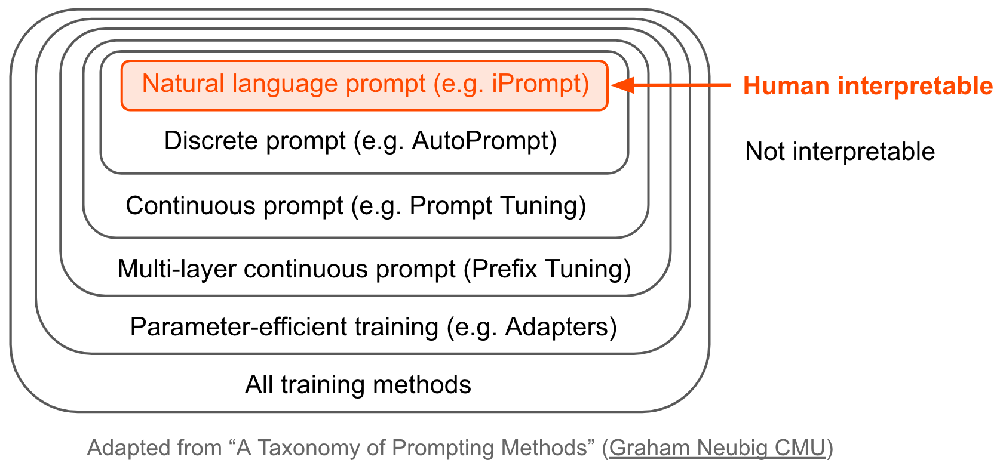
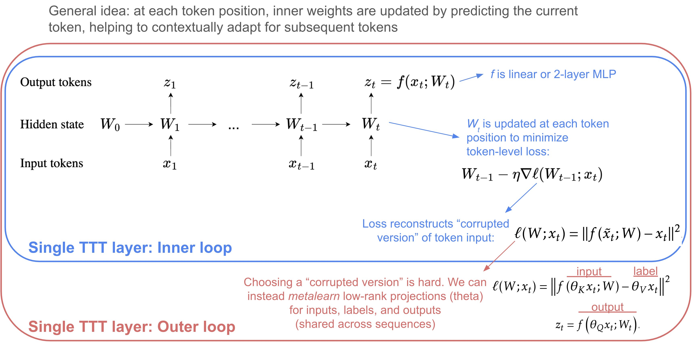

7.7. llms#
See related papers in the 📌 interpretability page.
7.7.1. prompting#
Pre-train, Prompt, and Predict: A Systematic Survey of Prompting Methods in Natural Language Processing (liu…neubig, 2021)
from feature-engineering -> architecture engineering -> prompt engineering (nowadays, it’s data engineering)
Overview figure

early prompting papers
LAMA: Language Models as Knowledge Bases? (petroni…riedel, 2019) - use fill-in-the-blank (cloze) prompts for extracting knowledge from LLMs
create LAMA probe - dataset of (subject, relation, object) triplets with templates – find that BERT can recall these relations
How to Query Language Models? (adolphs et al. 2021) - query LLMs by example (e.g. “Ronaldo plays for Portugal. Who does Neuer play for?”)
How Can We Know What Language Models Know? (jiang … neubig, 2020)
mining-based and paraphrasing-based methods to automatically generate high-quality diverse prompts
ensemble methods to combine answers from different prompts (e.g. avg logits and more)
Noisy Channel Language Model Prompting for Few-Shot Text Classification (min et al. 2022)
Querying \(P(question|answer)\) with Bayes rule outperforms standard querying \(P(answer|question)\)
7.7.1.1. (auto)prompting#

natural-language prompting
iPrompt: Explaining Patterns in Data with Language Models via Interpretable Autoprompting (singh, morris, …gao, 2022)
APE: LLMs Are Human-Level Prompt Engineers (zhou…ba, 2022)
similar to iPrompt, (1) propose prompt candidates with an LLM, (2) score the prompts by the accuracy they yield when using another LLM and (3) regenerate similar prompt candidates
experiments on instruction induction datasets + truthful QA
FluentPrompt: Toward Human Readable Prompt Tuning (shi, …, zettlemoyer, 2022) - use langevin sampling + fluency constraint to generate prompt
experiments relatively weak: 3 sentiment datasets + autoprompt is the only baseline
APO: Automatic Prompt Optimization with “Gradient Descent” and Beam Search (pryzant…zeng, 2023) - update prompts based on errors made by previous prompts
OPRO: LLMs as Optimizers (yang…quoc le, zhou, & chen , 2023) - add in past prompts with their scores during optimization
Promptbreeder: Self-Referential Self-Improvement Via Prompt Evolution (fernando…rocktaschel, 2023) - simultaneously improve prompts with LLM + improve the mutation-prompts the LLM uses to mutate the prompts
Connecting LLMs with Evolutionary Algorithms Yields Powerful Prompt Optimizers (guo…yang, 2023)
PromptAgent: Strategic Planning with LMs Enables Expert-level Prompt Optimization (wang…hu, 2023) - iterate on prompt errors using MC tree search
Language Models as Black-Box Optimizers for Vision-Language Models (yu…pathak, & ramanan, 2023)
Automatic Prompt Optimization with “Gradient Descent” and Beam Search (pryzant…zeng, 2023) - LLM computes “gradient” by describing error
Are Large Language Models Good Prompt Optimizers? (ma…huang, 2024) - critique that models often struggle
discrete prompting
AutoPrompt: Eliciting Knowledge from Language Models with Automatically Generated Prompts (shin…sameer singh, 2020)
select prompts from a fixed set of tokens (resulting prompts are not coherent)
Universal Adversarial Triggers for Attacking and Analyzing NLP (wallace…sameer singh, 2019 ) - find input-agnostic sequences of tokens that trigger a model to produce a specific prediction when concatenated to any input from a dataset
RLPrompt: Optimizing Discrete Text Prompts with Reinforcement Learning (deng…hu, 2022)
LM-BFF: Making Pre-trained Language Models Better Few-shot Learners (gao et al. 2020) - uses T5 to generate (i) template for the task (which might include a whole example or two) + (i) appropropriate label tokens in the vocabulary for the task (suffers from computationally intensive search + sub-optimal discrete space search)
PADA: Example-based Prompt Learning for on-the-fly Adaptation to Unseen Domains (ben-david, …, reichart, 2022)
continuous prompt optimization
Prefix-Tuning: Optimizing Continuous Prompts for Generation (li & percy liang, 2021) – optimizes in continuous space for language generation tasks
learn to map some parameters \(\theta\) through and MLP to generate a starting hidden state \(h_i\) – never actually sends the prefix through the network
P-Tuning: GPT Understands, Too (liu et al. 2021) – use LSTM to generate prompt embeddings (don’t map to tokens)
Control Prefixes for Parameter-Efficient Text Generation (clive, cao, & rei, 2022) - allow for adapting the prefix to each input example
DART: Differentiable Prompt Makes Pre-trained Language Models Better Few-shot Learners (zhang…chen, 2022)
reformulating NLP task into differentially optimizing the prompt template + target label (given a pre-trained model)
focus on smaller models (Roberta-large + GPT-2) + few training shots
fluency constraint to ensure association among prompt embeddings
WARP: Word-level Adversarial ReProgramming (Hambardzumyan et al. 2021) - add continous tokens + some task-specific parameters for better generalization
KnowPrompt: Knowledge-aware Prompt-tuning with Synergistic Optimization for Relation Extraction (Chen et al. 2021) – incorporate relations, visualize learned prompt vectors with t-SNE
misc
Context-faithful Prompting for LLMs (zhou, shang, poon & chen, 2023) - ask question in clever way to force LLM to follow it
SentiPrompt: Sentiment Knowledge Enhanced Prompt-Tuning for Aspect-Based Sentiment Analysis (Zhang et al. 2021) - use sentiment knowledge penalties in the prompt
Meta-learning via Language Model In-context Tuning (yanda chen et al. 2022) - given new task with new instruction
Prompt Programming for LLMs: Beyond the Few-Shot Paradigm (Reynolds & McDonell, 2021) - define metaprompts as general wrappers around tasks e.g. “This problem asks us to”
Re3: Generating Longer Stories With Recursive Reprompting and Revision (yang et al. 2022) - generate summaries, then expand and revise with prompts
Directional Stimulus Prompting (li, baoling peng, …jianfeng gao, xifeng yan, 2023) - generate hint keywords using small LLM that are put into the prompt when calling large LLM
memory-assisted prompt-editing (madaan…yang, 2022) - allows model to “save things to memory” that get added to prompt when needed
Prompting Is Programming: A Query Language For LLMs (Beurer-Kellner, Fischer, & Vechev, 2022)
can benefit from training for promptability
Adapting Language Models for Zero-shot Learning by Meta-tuning on Dataset and Prompt Collections (zhong…klein, 2021)
Continued Pretraining for Better Zero- and Few-Shot Promptability (wu…sameer singh, beltagy, 2022)
7.7.1.2. llm chaining / decoding#
many notes are from this thread on chaining models together
overviews
Ai chains: Transparent and controllable human-ai interaction by chaining LLM prompts (wu, terry, & cai, 2022) - chaining LLM steps together: output of one step becomes the input for the next
interactive system where users can modify chains + their intermediate results – improves performance + human experience
Language Model Cascades (dohan…sutton, 2022) - treat chaining models as probabilistic programs
use a probabilistic-programming language (PPL) to define a joint probability model on string-valued random variables, parameterized using LMs, and then condition this model on string-valued observations in order to compute a posterior over string-valued unknowns
self-PPLs extend probabilistic graphical models to support more complex joint distributions whose size and “shape” can itself be stochastic
e.g., a graph unrolled for a random number of iterations, until a data-dependent stopping criterion is met
variables are all text: questions \(Q\), answers \(A\), and intermediate thoughts \(T\)
Prover-Verifier Games improve legibility of LLM outputs (kirchner, chen, … leike, mcaleese, & burda, 2024) - trained strong LMs to produce text that is easy for weak LMs to verify and found that this training also made the text easier for humans to evaluate
posthoc
understanding chain-of-thought and its faithfulness
Faithful Chain-of-Thought Reasoning (yu et al. 2023)
Contrastive Chain-of-Thought Prompting (chia…bing, 2023)
Program of Thoughts Prompting: Disentangling Computation from Reasoning for Numerical Reasoning Tasks (chen et al. 2022)
Critiques
Do Models Explain Themselves? Counterfactual Simulatability of Natural Language Explanations (yanda chen, zhong, …, steinhardt, yu, mckeown, 2023)
Towards Consistent Natural-Language Explanations via Explanation-Consistency Finetuning (chen…gao, 2024)
Benchmarking and Improving Generator-Validator Consistency of Language Models (lisa li…liang, 2023)
The Unreliability of Explanations in Few-shot Prompting for Textual Reasoning (ye & durrett, 2022)
Language Models Don’t Always Say What They Think: Unfaithful Explanations in Chain-of-Thought Prompting (turpin, …, bowman, 2023)
CoT explanations can be heavily influenced by biasing the model towards certain answers, thereby yielding invalid explanations
try biasing in 2 ways: answer is always (A), or setting where prompt suggests a certain answer
Two Failures of Self-Consistency in the Multi-Step Reasoning of LLMs (chen, …, bowman, cho, 2023) - models fail at these 2 tasks:
hypothetical consistency (the ability for a model to predict what its output would be in a hypothetical other context)
compositional consistency (consistency of a model’s outputs for a compositional task even when an intermediate step is replaced with the model’s output for that step)
faithfulness metric = model sensitivity to removing some of the explanation
Question Decomposition Improves the Faithfulness of Model-Generated Reasoning (anthropic, 2023) - introduce factored decomposition to improve faithfulness metric
Measuring Faithfulness in Chain-of-Thought Reasoning (anthropic, 2023) - in addition to just removing some of the explanation, also add mistakes to it / paraphrase it
larger models become less faithful by this metric
Logical Satisfiability of Counterfactuals for Faithful Explanations in NLI (sia…zettlemoyer, mathias, 2023)
Measuring and Improving Attentiveness to Partial Inputs with Counterfactuals (elazar…sameer singh, noah smith, 2023)
Faithful Explanations of Black-box NLP Models Using LLM-generated Counterfactuals (gat…reichart, 2023)
Counterfactually Aware Fair Text Generation (banerjee…bhatia, 2023)
Causal Proxy Models for Concept-based Model Explanations (wu…potts, 2023)
Evaluating Models’ Local Decision Boundaries via Contrast Sets (gardner…zhou, 2020)
Are LLMs Post Hoc Explainers? (kroeger…lakkaraju, 2023)
Chain-of-Thought Prompting (wei et al. 2022): in few-shot prompts, don’t just provide answer but also reasoning
model outputs reasoning + answer, leading to improved performance
Self-Discover: LLMs Self-Compose Reasoning Structures (zhou…le…zheng, 2024) - LLMs come up with their own step-by-step structure for a task
Self-Consistency Improves Chain of Thought Reasoning in Language Models (wang, wei, schuurmans, quoc le, … zhou, 2022) - use output samples rather than greedy and return the most consistent final answer in the set
Challenging BIG-Bench Tasks and Whether Chain-of-Thought Can Solve Them (suzgun, …, quoc le, …, jason wei, 2022)
self-ask (Press et al., 2022) - LLM asks itself (and then answers) follow-up questions before answering the initial question
Text Classification via LLMs (sun…wang, 2023) - add clues to the prompt
Let’s Do a Thought Experiment: Using Counterfactuals to Improve Moral Reasoning (ma, …, chen, 2023) - counterfactuals help improve CoT
RCOT: Detecting and Rectifying Factual Inconsistency in Reasoning by Reversing Chain-of-Thought (xue et al. 2023)
SelfCheck: Using LLMs to Zero-Shot Check Their Own Step-by-Step Reasoning (miao, teh, & rainforth, 2023)
EchoPrompt: Instructing the Model to Rephrase Queries for Improved In-context Learning (mekala…sameer singh, 2023) - replace let’s think step by step with Let’s repeat the question and also think step by step
Let’s Think Dot by Dot: Hidden Computation in Transformer Language Models (pfau, merrill, & bowman, 2024)
Coconut: Training Large Language Models to Reason in a Continuous Latent Space (hao…weston, tian, 2024) - requires some extra finetuning
Show Your Work: Scratchpads for Intermediate Computation with Language Models (nye et al. 2021)
selection inference (creswell et al. 2022) - generate set of facts, then iteratively generate inferences from the facts to yield the final answer
least-to-most prompting (zhou…quoc le et al. 2022) - prompt LLM with context showing how to reduce into subproblems; then LLM sequentially solves the subproblems, using the previous answers
Generated Knowledge Prompting for Commonsense Reasoning (liu…hasjishirzi, 2021) - generate knowledge from an LLM then provide it as additional input when answering a question
maieutic prompting (jung et al. 2022) - generate a tree of all explanation of the form “True, because…”, “False, because…” then query LLM with these as prompts
then use Max-SAT to try to satisfy as many relations between the model explanations as possible to come up with the true answer
using verifiers
LM vs LM: Detecting Factual Errors via Cross Examination (cohen et al. 2023)
Thread of papers combating hallucination
verifiers (cobbe et al. 2021) - train model to judge whether an answer and thought are likely to be “valid”
subgoal search (czechowski et al. 2021) - train model to generate subgoals then solve them in a graph
STaR “Self-taught reasoner” (zelikman…goodman, 2022)
first, finetune on observed \((Q, T, A)\) triplets, where \(T\) is a rationale
then, impute unknown \(T_i\) given dataset of pairs \((Q_i, A_i)\) by sampling until finding a \(T_i\) which leads to the correct answer
robotics-specific
zero-shot planning (huang, abbeel, pathak, & mordatch, 2022)
tree-related
Aug-tree (singh, askari, caruana, & gao, 2023)
Tree-prompting (morris, singh, rush, gao, & deng, 2023)
Interpretable-by-Design Text Classification with Iteratively Generated Concept Bottleneck (ludan…callison-burch, 2023)
tree of thoughts (yao et al. 2023) - LLM generates a tree of intermediate answers and perform steps such as backtracking
Graph of Thoughts: Solving Elaborate Problems with LLMs (besta, .., hoefler, 2023) - allows merging/looping in the tree, e.g. for sorting
optimizing cost efficiency
frugalGPT (chen, zaharia, & zou, 2023)
3 components
prompt adaptation - identify effective / shorter prompts (e.g. less demonstrations)
LLM approximation - create simpler/cheaper LLMs
LLM cascade - adaptively choose LLM based on query
train “generation scoring function” - returns reliability score from 0 to 1 for each (question, answer)
router sequentially proceeds through LLM APIs, returning the answer if the reliability score is high enough
frugalML (chen, zaharia, zou, 2020) - tradeoff performance with budget for sequential cascade of API calls for single label
FrugalMCT (chen, zaharia, zou, 2022) - extends to multilabel
EcoAssistant: Using LLM Assistant More Affordably and Accurately (zhang…awadallah, wang, 2023) - answer code-driven queries efficiently using code executor + cascade of increasingly complex LLMs
decoding
Greedy - iteratively pick highest-probability token
Nucleus sampling: The Curious Case of Neural Text Degeneration (holtzman…choi, 2019)
Contrastive decoding (li et al. 2022) - decode based on the difference between a large and small LLM
Context-aware decoding (shi, …zettlemoyer, yih, 2023) - the difference between the output probabilities when a model is used with and without context
DoLa: Decoding by Contrasting Layers Improves Factuality in LLMs (chuang…he, 2023) - contasting later layers with early layers can improve truthfulness
Calibrate Before Use: Improving Few-Shot Performance of Language Models (zhao, …, dan klein, sameer singh, 2021) - to make prompting easier, first calibrate output distr by making it uniform when given null inputs, e.g. “N/A”
Minimum Bayes Risk Decoding (suzgun, …, jurafsky, 2022) or (freitag et al. 2022)
A Frustratingly Simple Decoding Method for Neural Text Generation (yang, …, shi, 2023) - build an anti-LM based on previously generated text and use this anti-LM to penalize future generation of what has been generated
fast decoding
KV caching + some other tricks - if repeatedly using the same tokens at the beginning of the context, can cache the KV vectors for those tokens
KV caching trades off speed with memory
speculative decoding (leviathan, kalma, & matias, 2022) - decode multiple tokens in parallel with small model, potentially skipping steps for the large model
early exit - popular way to speed up inference
Multi-exit vision transformer for dynamic inference (Bakhtiarnia, A., Zhang, Q. and Iosifidis, A., 2021)
early layers have large activation map so early exist classifier must be complex
solution: ViT class token allows early-exit classifier to have constant complexity
DeeBERT: Dynamic early exiting for accelerating BERT inference (xin…lin, 2020)
prompt ensembles
liu…neubig, 2023 review discusses different strategies for ensembling prompts, e.g. averaging, weighted averaging
black-box querying
Tree-Prompting (morris…deng, 2023)
PromptBoosting: Black-Box Text Classification with Ten Forward Passes (hou, …, jacob andreas, …, zhang, 2022) - get a small pool of prompts, learn a verbalizer (final classification layer) for each, then ensemble them with AdaBoost on LLM output
people have studied many works on prompt ensembling (e.g. lester et al. 2021)
Boosted Prompt Ensembles for LLMs (pitis…ba, 2023) - similar but use CoT-style prompts and tasks, e.g. GSM8k
PREFER: Prompt Ensemble Learning via Feedback-Reflect-Refine (zhang…cai, 2023) - builds set of prompts dynamically rather than assuming they’re fixed
PTR: Prompt Tuning with Rules for Text Classification (han et al. 2021) – use logic rules to construct prompts with sub-prompts for many-class text classification (prompt is constructed hierarchically, but only one call is made to the LLM for inference)
soft prompts
Learning How to Ask: Querying LMs with Mixtures of Soft Prompts (Qin & Eisner, 2021) - learn a mixture of soft prompts using gradient descent
require model retraining
PRBOOST: Prompt-Based Rule Discovery and Boosting for Interactive Weakly-Supervised Learning (zhang…zhang, 2022) - iteratively (1) select high-error examples, (2) have human label them as rules, and (3) use boosting to train model on the new rules + ensemble
typical rule generation
Snuba (Varma and Ré, 2018) generates heuristics based on a small labeled dataset with pre-defined rule types
TALLOR (Li et al. 2021a) & GLaRA (Zhao et al. 2021) study rule expansion for NER problem based on lexical information and then select rules based on a hand-tuned threshold
Prompt ensembling / selection without labels
Zero-Label Prompt Selection (liao, zheng, & yang, 2022) - use prompts to label unlabeled data and then select prompts using these labels
A Simple Zero-shot Prompt Weighting Technique to Improve Prompt Ensembling in Text-Image Models (alingham…lakshminarayanan, 2023) - use confidence (max output logit) after appropriate normalization as weight
few-shot text classification
FastFit (yehudai & bandel, 2024) - fit few-shot batch with contrastive examples then predict using similarities to shots rather than a classification head (base model is roberta)
SetFit (tunstal…pereg, 2022) - finetune stentence transformer with contrastive loss, then train classification head
self-verification
review on self-verification (pan…wang, 2023)
Self-Refine: Iterative Refinement with Self-Feedback (madaan, …, clark, 2023)
Self-Verification Improves Few-Shot Clinical Information Extraction (gero et al. 2023)
SelfCheckGPT: Zero-Resource Black-Box Hallucination Detection for Generative LLMs (manakul…gales, 2023)
7.7.1.3. llm querying / causal inference#
Can LLMs Infer Causation from Correlation? (jin…scholkopf, 2023) - introduce Corr2Cause dataset (must infer causal graph from correlational statements), doesn’t test pre-existing knowledge
Causal Reasoning and LLMs: Opening a New Frontier for Causality (kiciman…tan, 2023)
LLMs to be used alongside existing causal methods, as a proxy for human domain knowledge and to reduce human effort in setting up a causal analysis
cause-effect pairs, LLM has to discover from graph (tubingen benchmark, neuropathic pain, etc.)
Causal Inference in Natural Language Processing: Estimation, Prediction, Interpretation and Beyond (feder…vetich, diyi yang, 2022)
Zero-shot causal learning (nilforoshan…leskovec, 2023)
Discovering Latent Knowledge in Language Models Without Supervision (burns, ye, klein, & steinhardt, 2022) - identify whether text is true or false directly from a model’s unlabeled activations
Inference-Time Intervention: Eliciting Truthful Answers from a Language Model (li…pfister, wattenberg, 2023)
InferBERT: A Transformer-Based Causal Inference Framework for Enhancing Pharmacovigilance (wang…liu, 2021) - learn + test feature relationships from attention weights
CausaLM: Causal Model Explanation Through Counterfactual Language Models (2021) - produce example-level causal model explanations using models finetuned on auxiliary adversarial tasks derived from the causal graph of the problem
Investigating Gender Bias in Language Models Using Causal Mediation Analysis (vig, …, shieber, 2020)
Applies causal mediation analysis to identify decisive neurons and attention heads responsible for gender bias in LLMs
Identifies a small handful of decisive attention heads in this case
Amnesic Probing: Behavioral Explanation with Amnesic Counterfactuals (elazar, …, goldberg, 2021) - measure the importance of specific info within a model by introducing a causal intervention to erase that information, then observing the causal effects
TrustLLM (sun…zhao, 2024) - evaluation and benchmark of many aspects of trustworthiness (github)
What Evidence Do Language Models Find Convincing? (wan, wallace, & klein, 2024) - rather than relying on facts, LLMs largely rely on textual similarities in evidence to decide whether it’s important
Deductive Closure Training of Language Models for Coherence, Accuracy, and Updatability (aykurek…andreas, 2024) - LMs generate additional text implied by documents, reason about the generated text, and finetune on the correct text
LMs’ reasoning capabilities during inference can be leveraged during training to improve their reliability
7.7.1.3.1. uncertainty#
Semantic Uncertainty (kuhn, gal, & farquhar, 2023) - instead of calculating entropy over tokens, first generate set of answers, then cluster them base on semantic equivalence, before computing entropy
clustering is done via an LM that tests entailment e.g. E.g., “The capital of France is Paris.” entails “Paris is the capital of France.” because they mean the same thing
Can LLMs Express Their Uncertainty? An Empirical Evaluation of Confidence Elicitation in LLMs (xiong…hooi, 2023)
verbalized uncertainty - model outputs its own uncertainty
consistency-based uncertainty - consistency between output generations
Quantifying Uncertainty in Natural Language Explanations of LLMs (tanneru…lakkaraju, 2023)
probing uncertainty (like consistency-based uncertainty above) - applies input perturbations (e.g., paraphrasing) and measure the consistency of the resulting explanations
verbalized uncertainty of explanations often performs poorly
Relying on the Unreliable: The Impact of Language Models’ Reluctance to Express Uncertainty (zhou…sap, 2024)
LMs are often unable to express uncertainties
LM confidences tend to be overconfident
users rely heavily on LM generations, whether or not they are marked by certainty
Teaching Models to Express Their Uncertainty in Words (Lin et al., 2022) - GPT3 can generate both an answer and a level of confidence (e.g. “90% confidence”)
Decomposing Uncertainty for LLMs through Input Clarification Ensembling (hou…zhang, 2023)
7.7.1.4. prompt compression / compiling#
Learning How to Ask: Querying LMs with Mixtures of Soft Prompts (Qin & Eisner, 2021) - learn a mixture of soft prompts using gradient descent
liu…neubig, 2023 review discusses different strategies for ensembling prompts, e.g. averaging, weighted averaging
Prompt ensembling / selection without labels
Zero-Label Prompt Selection (liao, zheng, & yang, 2022) - use prompts to label unlabeled data and then select prompts using these labels
A Simple Zero-shot Prompt Weighting Technique to Improve Prompt Ensembling in Text-Image Models (alingham…lakshminarayanan, 2023) - use confidence (max output logit) after appropriate normalization as weight
LLMLingua (jiang, wu…qiu, 2023) - learn BERT-size model to compress prompt (iterative token classification approach from distilled GPT-4 compressed prompts)
LongLLMLingua: Accelerating and Enhancing LLMs in Long Context Scenarios via Prompt Compression (jiang, wu…qiu, 2023)
7.7.1.5. classifier-guided generation#
Plug and Play Language Models: A Simple Approach to Controlled Text Generation (dathathri, …, yosinski, & liu, 2020)
gradients from the classifier push the LM’s hidden activations, then recompute logits to guide generation (and maybe avg with original logits to maintain fluency)
FUDGE: Controlled Text Generation With Future Discriminators (yang & klein, 2021)
classifier predicts probability of attribute for running sequence with each next-token appended
these attribute probs. are multiplied with next-token probs for each token and then we sample from that distr (after normalization)
Diffusion-LM Improves Controllable Text Generation (lisa li, thickstun, gulrajani, liang, & hashimoto, 2022)
Mixture of Soft Prompts for Controllable Data Generation (chen, lee, …, yu, 2023) - trains a small model on data from a big frozen LLM that is then more controllable
7.7.2. architecture engineering & vetting#
7.7.2.1. architecture/attention variants#
state space models (good overview in albert gu thesis, 2023)
S4: structured state space models (gu…re, 2022) - similar to RNNs but can predict all outputs at once via convolution
the core of the state space model is basically a linear RNN
inputs x, hidden states h, outputs y
3 matrices: \(A, B, C\)
\(y_i = C h_i\)
\(h_i = A h_{i-1} + B x_i\)
note: there is no nonlinearity between hidden states
note: the transition from one hidden state to the next is the same for all positions (except for the input)
can compute hidden states simultaneously by just pre-multiplying these A and B matrices with x the right number of times ( a convolution operation)
mamba: selective state space models (gu & dao, 2023)
changes (2) above – the transition from one hidden state to the next now depends on the input (making it closer to LSTMs)
\(B = B(x)\)
\(C = C(x)\)
RNNs are not Transformers (Yet): The Key Bottleneck on In-context Retrieval (wen, dang, & lyu, 2024) - RNNs fail to retrieve info from long contexts, RAG helps
MAD synthetic tasks: Mechanistic Design and Scaling of Hybrid Architectures (poli…ermon, re, zhang, & massaroli, 2024) - introduces 6 synthetic tasks on which performance correlates very well when scaling to real tasks: in-context recall, fuzzy in-context recall, noisy in-context recall, selective copying, compression, memorization
Scalable MatMul-free Language Modeling (zhu…eshraghian, 2024) - LM architecture that doesn’t use matmuls, builds on GRU, and shows improved efficiency on FPGAs
The Era of 1-bit LLMs: All Large Language Models are in 1.58 Bits (ma…wei, 2024)
BitNet: Scaling 1-bit Transformers for Large Language Models (wang…wei, 2023)
Misc
Tree Transformer: Integrating Tree Structures into Self-Attention (wang, .., chen, 2019)
Waveformer: Linear-Time Attention with Forward and Backward Wavelet Transform (zhuang…shang, 2022)
White-Box Transformers via Sparse Rate Reduction: Compression Is All There Is? (yaodong yu…yi ma, 2023)
Diffusion models
Discrete Diffusion Modeling by Estimating the Ratios of the Data Distribution (lou, meng, & ermon, 2024) - model \(p(\text{altered text}) / p(\text{orig text})\), and make alterations using word swaps at individual locations
From Denoising Diffusions to Denoising Markov Models (benton…doucet, 2024)
Not clear that these are better than just iteratively masking/replacing a word with BERT
7.7.2.2. mixture of experts (MoE) / routing#
mixture of experts models have become popular because of the need for (1) fast speed / low memory at test time while still (2) having a large model during training
note: nowadays often the “experts” are different MLPs following the self-attention layers (since their computations can be computed independently)
A Review of Sparse Expert Models in Deep Learning (fedus, jeff dean, zoph, 2022)
sparsity decouples the parameter count from the compute per example allowing for extremely large, but efficient models
routing algorithm - determines where to send examples
discreteness makes it difficult
some works use RL to learn routing
standard approach uses gumbel-softmax
usually get matrix of similarities between input tokens and experts and route based on these
sometimes route to topk experts rather than top1
load balancing - usually add an auxiliary loss to encourage equal tokens being sent to different experts
non-specialized experts
Early versions (Jacobs, michael jordan, nowlan, & hinton, 1991) had independent feed-forward networks serving as experts
Sparsely-gated MOE layer (Shazeer…quoc le, hinton, dean, 2017) have been studied with token-based routing with backprop
replace FFN in transformers with expert layers
GShard Lepikhin et al. (2021), which appplies this concept to machine translation
Switch transformers (Fedus et al. (2022)) simplifies the architecture to activation of only one expert per layer
BASE Layers Lewis et al. (2021) - find an alternative approach to routing by formulating it as a linear assignment problem
Hash layers Roller et al. (2021) use a fixed hash as the gating function
THOR (zuo, liu…zhao, gao, 2022) - randomly route to different experts then merge at the parameter level at test time
routing notes - make hard decision but still want to learn probabilities
straight-through estimator (STE) - take the argmax during the forward pass, while considering the original probabilities in the backward pass
highly biased
gumbel-softmax- allows for better sampling
specialized experts as fully independent models (sometimes for multi-task learning)
DEmix Layers (Gururangan…smith, zettlemoyer, 2021) – DEMix layers – placed in the feedforward layers of the Transformer – contain experts which specialize on specific domains. Routing at train time is determined only by the domain label, but all experts are activated at inference time and mixed according to weights estimated from a validation set
Sparsely Activated Mixture-of-Experts are Robust Multi-Task Learners (gupta…awadallah, gao, 2022) - use task description to improve routing
Pfeiffer et al. (2022) - multilingual expert model with language-specific routing
task-level MoE Kudugunta et al. (2021) – multi-task expert model with task-specific routing
scaling up
OPT-MOE (artetxe et al. 2021)
AutoMoE (jawahar, mukherjee, liu…gao, 2022)
Towards Understanding Mixture of Experts in Deep Learning (chen…gu, li, 2022)
Interpretable Mixture of Experts (ismail…pfister, 2023) - each sample assigned to single expert for prediction
InterpretCC: Intrinsic User-Centric Interpretability through Global Mixture of Experts (swamy…kaser, 2024) - first, discriminator predicts which features are important. Then, all other features are masked and used for prediction. The discriminator network can additionally select a different network to send different features to
7.7.2.3. pruning#
SparseGPT: Massive Language Models Can Be Accurately Pruned in One-Shot (frantar & alistarh, 2023) - prune GPT-style models to atleast 50% sparsity in one-shot, without any retraining, at minimal loss of accuracy
Cramming: Training a Language Model on a Single GPU in One Day (geiping & goldstein, 2022) - tricks for training BERT
7.7.2.4. adaptation / transfer#
These are transformer-specific. For more general notes, see 📌 transfer learning or 📌 uncertainty. Most of these approaches can be combined with metalearning.
finetuning
finetune all DNN params
finetune linear layer on activations
standard - train linear model on the embedding of the first token (usually an added
[CLS]token) (peters et al. 2018)finetune linear model on all the activations
e.g. evci, et al. 2022 - learn linear layer (using group-lasso) on features extracted from all layers
finetune specific DNN params (e.g. just the bias terms)
Cutting Down on Prompts and Parameters (logan…sameer singh, riedel, 2021) - finetune only the bias terms; works even with null prompts
BitFit: Simple Parameter-efficient Fine-tuning for Transformer-based Masked Language-models (zaken, ravfogel, & goldberg, 2021) - finetune only bias terms
adapter - finetune lightweight layers on top of pre-trained layers (between finetuning all layers, and just finetuning a new layer)
add some new layers and retrain some specific things (all human choices)
side-tuning (zhang, sax…malik, 2020) - train a “side” network that is fused with the pretrained model via summation
Combining Modular Skills in Multitask Learning (ponti, sordoni, bengio, & reddy, 2022) - learn adaptor with disentangled inventory of skills
vaguely similar to adapter
LoRA
QLoRA: Efficient Finetuning of Quantized LLMs (dettmers, …, zettlemoyer, 2023)
TOAST (shi, …, darrel, xin wang, 2023) - use top-down attention steering for efficient finetuning
predict a mask
ablate some model weights by training a binary mask over model parameters (Zhao et al., 2020; Radiya-Dixit and Wang, 2020)
predict mask over attention heads
prompting = few-shot learning = priming = in-context learning (starts with GPT)
prompting without changing any model parameters
limitation: can’t exploit sets longer than the training window
MetaICL: Learning to Learn In Context (min et al. 2022) - tune LLM to do in-context learning on a large set of training tasks (few-shot prompting and training time and at test-time)
Visual Prompting via Image Inpainting (bar…darrell, globerson, efros, 2022 )
PatternExploiting Training (PET) – Exploiting Cloze Questions for Few Shot Text Classification and Natural Language Inference (schick & schutze, 2021)
cloze questions - same as masked language modeling: task is to replace some missing words
use cloze-question templates (e.g. it was “good” or “bad”) to get soft labels for unlabeled data and then finetune on theses
prompt-tuning (also see next section on autoprompting)
Attentional Mixtures of Soft Prompt Tuning for Parameter-efficient Multi-task Knowledge Sharing
Mixture of Soft Prompts for Controllable Data Generation (chen, … yu, 203) - LLMs as Synthetic Data Generators for Training Smaller Models
mt-dnn line of work
Multi-Task Deep Neural Networks for Natural Language Understanding (xiaodong liu … gao 2019) - multi-task learning on the 9 glue tasks (first layers are shared, then some task-specific layers at top)
RAdam: On the Variance of the Adaptive Learning Rate and Beyond (liyuan liu…gao, han, 2020)
usually need to do learning-rate warmup when trainin (e.g. with Adam)
RAdam = add a term to rectify the variance of the adaptive learning rate in Adam
SMART: Robust and Efficient Fine-Tuning for Pre-trained Natural Language Models through Principled Regularized Optimization (jiang…gao, zhao, 2020)
Smoothness-inducing regularization, which effectively manages the complexity of the model
Bregman proximal point optimization to prevent aggressive updating
Microsoft Toolkit of Multi-Task Deep Neural Networks for Natural Language Understanding (xiaodong liu…gao, 2020)
Posterior Differential Regularization with f-divergence for Improving Model Robustness (hao cheng, …, gao 2021)
regularize model posterior difference between clean + noisy inputs (e.g. adversarially attacked inputs)
comparing different tasks
Task2Vec: Task Embedding for Meta-Learning (achille, …, soatto, perona, 2019) - summarize each task as a vector, by taking diagonal of fisher info matrix (derivative of network output wrt to parameters) - clusters similar tasks
Efficiently Tuned Parameters are Task Embeddings (zhou…mcauley, 2022)
Editing Models with Task Arithmetic (ilharco, ribeiro, …, farhadi, 2022) - task vector is model weights after task finetuning - model weights before finetuning
can use this direction to alter model behavior
Overcoming Catastrophic Forgetting in Zero-Shot Cross-Lingual Generation (vu….constant, 2022) - train with prompts of some (language translation, task) pairs and show that they can generalize to new (language, task) pairs
instruction tuning / rlhf
Teach Llamas to Talk: Recent Progress in Instruction Tuning (gao blogpost 2023)
Tell Your Model Where to Attend: Post-hoc Attention Steering for LLMs, PASTA (zhang et al. 2023)
The Truth is in There: Improving Reasoning in Language Models with Layer-Selective Rank Reduction (sharma…misra, 2023)
human feedback
Learning to summarize with human feedback (OpenAI, 2020)
Can language models learn from explanations in context? (lampinen et al. 2022)
natural language feedback (scheurer et al. 2022) - makes training more efficient
Training Language Models with Language Feedback at Scale (scheurer et al. 2023)
Explanation-based Finetuning Makes Models More Robust to Spurious Cues (ludan…callison-burch, 2023)
Post hoc explanations of language models can improve language models (krishna…singh, lakkaraju, 2023) - use rationales as corrective signals for LLMs
Show Me How It’s Done: The Role of Explanations in Fine-Tuning Language Models (ballout…kuhnberger, 2023)
RLAIF: Scaling Reinforcement Learning from Human Feedback with AI Feedback (lee…rastogi, 2023)
Tuning Language Models by Proxy (liu…choi, smith, 2024)
Self-Rewarding Language Models (yuan…weston, 2024)
7.7.2.5. test-time training#
Learning to (Learn at Test Time): RNNs with Expressive Hidden States (sun…guestrin, 2024)

Critique Fine-Tuning: Learning to Critique is More Effective than Learning to Imitate (wang…chen, 2025)
s1: Simple test-time scaling (muennighof…hashimoto, 2025)
7.7.3. (mech) interp#
7.7.3.1. model merging#
Model merging (some of these are non-transformer papers) = combine different models that have the same architecture (see collection of papers here and huggingface blog post here). Also see the review paper Deep Model Fusion: A Survey (li…shen, 2023)
standard methods (see mergekit package)
linear averaging, e.g. model soups (wortsman…schmidt, 2021)
spherical linear interpolation - interpolate angle but keep norm constant
TIES: Resolving Interference When Merging Models (yadav…raffel, bansal, 2023)
only keep top-k% most significant changes in weights
vote on signs of parameters
DARE (yu…li 2023)
randomly reset \(p\) fraction of changed fine-tuned weights to their original values in the base model
rescale remaining changed weights by \(1/(1-p)\)
passthrough/frankenmerging
stack layers to yield model with different size
e.g. depth up-scaling creates a larger model by merging some layers and copying others (solar 10.7B, kim…kim, 2023)
more complex posthoc methods
Learning to Route Among Specialized Experts for Zero-Shot Generalization (muqeeth, …, raffel, 2024) - PHATGOOSE routes to different LoRA model for each token and at each layer
Fisher-Weighted Averaging (matena & raffel, 2022) - merge models with same architecture with particular weights
Git Re-Basin: Merging Models modulo Permutation Symmetries (ainsworth, hayase, & srinivasa, 2022) - permute units of one model to align them with a reference model before merging; supports linear mode connectivity between ResNet models on CIFAR
ZipIt! Merging Models from Different Tasks without Training (stoica…hoffman, 2023) - layerwise merging & don’t merge all the layers
Model Merging by Uncertainty-Based Gradient Matching (adheim…khan, 2023)
UnIVAL: multimodal merging (shukor…cord, 2023)
Multimodal Model Merging (sung…bansal, wang, 2023) - merge a separately trained vision & language model and get a multiomodal model
LoraHub (huang…lin, 2023) - fiven examples from a new task, merge LoRA adaptors
AdaMerging: Adaptive Model Merging for Multi-Task Learning (yang…tao, 2023) - learn coefficients to average models by minimizing entropy on unlabeled test samples
Model Ratatouille: Recycling Diverse Models for Out-of-Distribution Generalization (rame…bottou, lopez-paz, 2022) - finetune many models initially trained on diverse tasks then average their weights
Diverse Weight Averaging for Out-of-Distribution Generalization (rame…cord, 2023)
UltraFuser - 2-stage training with token-level routing to 3 models (ding…sun, 2024)
training paradigms
Branch-Train-Merge: ELMS (Expert LMs) (li…smith, zettlemoyer 2022)
parallel language model of smaller expert LMs
each can be added/removed, ensembled, or parameter-averaged at any time for efficient scaling and rapid customization
improves perplexities, when controlling for training cost
require expert domain specialization
Cluster-Branch-Train-Merge (gururangan…smith, zettlemoyer, 2023) - start by clustering data to do unsupervised domain discovery
LiNeS: Post-training Layer Scaling Prevents Forgetting and Enhances Model Merging (wang…frossard, 2024) - updating deeper layers more than shallow layers helps prevent forgetting across tasks
fit many models into one
superposition of many models into one (cheung…olshausen, 2019) - both during training/testing models are indexed via a high-dim key for each task
supermasks in superposition (wortsman, …, yosinski, farhadi, 2020) - randomly fixed base net + for each task finds subnet that performs well
if task identity not given, correct subnet inferred by minimizing output entropy
non-transformer
snapshot ensembles - average different checkpoints during training (huang et al. 2017)
stochastic weight averaging (izmailov, …, wilson, 2019) - average multiple checkpoints during training
batch ensemble (wen et al. 2020) - have several rank-1 keys that index different weights hidden within one neural net
data-based distillation for model merging (roth…akata, 2024) - can combine multiple models that excel at different classes using data-based distillation
Model Fusion via Optimal Transport (singh & jaggi, 2019) - layer-wise fusion algorithm using optimal transport
Qualitatively characterizing neural network optimization problems (goodfellow, viynals, & saxe, 2014) - linear interpolation experiments on DNNs
7.7.3.2. editing#
Editing is generally very similar to just adaptation/finetuning. One distinction is that it tends to try to keep changes localized, in an effort not to affect performance for most of the model.
Tell Your Model Where to Attend: Post-hoc Attention Steering for LLMs (zhang, singh, liu, liu, yu, gao, zhao, 2023) - upweight attention scores at specific positions to improve LLM controllability
Editing LLMs: Problems, Methods, and Opportunities (yao, …, zhang, 2023)
model-editing = data-efficient alterations to a model
memory-based
SERAC: Memory-Based Model Editing at Scale (mitchell…manning, finn, 2022)
keep track of list of edits in external memory and use them as appropriate context at test time (don’t finetune the model, instead train a smaller simpler model for using the external contexts)
Language Modeling with Editable External Knowledge (li, liu…, neubig, andreas, 2024) - have LLM rewrite and update knowledge base as new docs are added
T-Patcher (Huang et al., 2023) and CaliNET (Dong et al., 2022) introduce extra trainable parameters into the feed- forward module of PLMs
weight updates
Knowledge Neurons in Pretrained Transformers (dai et al. 2021) - integrated gradients wrt to each neuron in BERT, then selectively udpate these neurons
ROME: Locating and Editing Factual Associations in GPT (meng, bau et al. 2022)
localize factual associations - causal intervention for identifying neuron activations that are decisive in a model’s factual predictions
“causal traces” - run net multiple times, introducing corruptions and then restore states from original non-corrupted forward pass to see which states can restore the original results
a small number of states contain info that can flip the model from one state to another
change factual associations - modify feedforward weights to update specific factual associations using Rank-One Model Editing (ROME)
MEMIT: Mass Editing Memory in a Transformer (meng…, bau, 2022)
Aging with GRACE: Lifelong Model Editing with Discrete Key-Value Adapters (hartvigsen, …, palangi, …, ghassemi, 2023)
Flexible Model Interpretability through Natural Language Model Editing (d’oosterlinck, …, potts, 2023)
Model Editing with Canonical Examples (hewitt, …, liang, manning, 2024)
meta-learning
KnowledgeEditor: Editing Factual Knowledge in Language Models (de cao, aziz, & titov, 2021) - train a network that takes in input, output, edit and predicts a weight update to the model
MEND: Fast model editing at scale (mitchell…finn, manning, 2022)
a collection of small auxiliary editing networks that use a single desired input-output pair to edit a pre-trained model
MEND learns to transform the gradient obtained by standard fine-tuning, using a low-rank decomposition of the gradient
REMEDI (hernandez, li, & andreas, 2023) and related activation engineering
get “edit vectors” by obtaining embeddings when passing attributes through LLM
perform edit by by adding linear transformation of edit vector to prompt embedding
then, perform generation with latent embedding
learn linear transformation given a dataset of examples with attributes and desired completions
(also regularize the model to not change too much on other stuff)
Activation Addition: Steering Language Models Without Optimization (turner…macdiarmid, 2023)
blog post: activation engineering: Steering GPT-2-XL by adding an activation vector (turner, …, mini, 2023)
obtain “steering vector” by embedding a phrase (e.g. love) and adding that vector to the llm embedding during generation
they only add the embedding for some layers for some tokens
Extracting Latent Steering Vectors from Pretrained Language Models (subramani, …, peters, 2022) - find latent vectors via optimization that cause an LLM to output a particular sequence
then, use these vectors to do things like transfer to new tasks / compute textual similarity
Function Vectors in LLMs (todd…wallace, bau, 2023)
In-Context Learning Creates Task Vectors (hendel, geva, & globerson, 2023)
Programming Refusal with Conditional Activation Steering (lee…dhurandhar, 2024)
PURR: Efficiently Editing Language Model Hallucinations by Denoising Language Model Corruptions (chen…sameer singh…kelvin guu, 2023)
new datasets
MQUAKE: Assessing Knowledge Editing in Language Models via Multi-Hop Questions (zhong…manning, potts, chen, 2023) - introduces benchmark MQUAKE + method MeLLo, which stores edited facts externally while prompting the language model iteratively to generate answers that are consistent with the edited facts
COUNTERFACT+ benchmark - checks that edits don’t affect existing info
ALMANACS: A Simulatability Benchmark for Language Model Explainability
model unlearning approaches (see review Rethinking Machine Unlearning for LLMs, liu et al. 2024)
gradient ascent - worsen performance on set of examples to forget
gradient descent - improve performance on examples labeled with hidden info, e.g. response “I don’t know”
localization-informed unlearning, e.g. ROME
influence function-based methods
prompt-based (e.g. only change prompt rather than model parameters)
Offset Unlearning for Large Language Models (huang…poon, chen , 2024) - unlearning for black-box models by learning the logit offset for contrasting with a smaller model
7.7.3.3. direct weight inspection#
overviews
Overview of mechanistic interpretability (nanda, 2022+)
review paper (rauker…hadfield-menell, 2023)
A Primer on the Inner Workings of Transformer-based Language Models (ferrando et al. 2024)
Representation engineering: A Top-Down Approach to AI Transparency (zou…kolter, hendrycks, 2023)
representation engineering (RepE) - analyzes representations/representation transformations rather than neurons or circuits
basically extends probing to more general tasks, including model control
Transformer visualization via dictionary learning: contextualized embedding as a linear superposition of transformer factors (yun, chen, olshausen, lecun, 2021) - investigate LLM embeddings of different words using dictionary learning
LLMs produce interesting contextualized word embeddings
dictionary elements (of activations across layers) correspond to meaningful things
dictionary element has size \(d\), the embedding size
given list of sentences \(S\), training matrix has size \(\left(\underbrace{\text{num\_layers}}_{\text{12 for BERT}} \cdot \sum_{s \in S} \text{len(s)}\right) \times \underbrace{d}_{\text{768 for BERT}}\)
dictionary coefficient: maps (text, layer, sequence_index) \(\to\) coefficient
extract \(d\)-dimensional embedding for text at specified layer & sequence_index
Neuron-level Interpretation of Deep NLP Models: A Survey (sajjad et al. 2022)
previous works generally use pre-specified concepts, and focus on
concept search - given a neuron find its concept(s)
neuron search - (ii) given a concept find its matching neuron(s)
concept search
visualization, e.g. karpathy, johnson, fei-fei li, 2015 visualize LSTM head response in text
elicit top-k ngram responses on a corpus, which are then labelled manually (kadar et al. 2017)
elicit top-k activating sentences from a corpus, which are then summarized using a parse tree into a synthetic explanation (na…kim, 2019)
limitation: the explanation may be ungrammatical and biased towards something arbitrary (like reptition)
input maximization (e.g. textattack, poerner et al. 2018)
Evaluating Neuron Interpretation Methods of NLP Models (fan…sajjad, 2023) - metric is how well evaluation from one method matches the other ones
A Circuit for Indirect Object Identification in GPT-2 small (wang, …, steinhardt, 2022)
explanation encompasses 26 attention heads grouped into 7 main classes
task: indirect object identification - “When Mary and John went to the store, John gave a drink to _ ” should be “Mary”
circuit
identify all previous names
remove duplicated names
output remaining name
Circuit Component Reuse Across Tasks in Transformer Language Models (merullo, eickhoff, & pavlick 2024) - find that the same circuit is used for 2 different tasks: IOI from above and Colored objects (from big-bench)
Sparse Feature Circuits: Discovering and Editing Interpretable Causal Graphs in Language Models (marks…belinkov, bau, mueller, 2024)
ex. for biasbios, find circuit and intervene so that it doesn’t rely on gender
Interpretability at Scale: Identifying Causal Mechanisms in Alpaca (wu…, potts, goodman, 2023) - propose boundless DAS and automatically identify a circuit for math
builds on DAS (geiger, …goodman, 2023)
N2G: A Scalable Approach for Quantifying Interpretable Neuron Representations in LLMs (foote, nanda, …, barez, 2023) - explain each neuron in a graph
Finding Skill Neurons in Pre-trained Transformer-based Language Models (wang et al. 2022) - some individual neurons are predictive of the final task (dubbed “skill neurons’)
circuits thread (elhage…olah, 2021)
all layers are same dimension and each attention block adds a vector to it
Although they’re parameterized as separate matrices, \(W_O W_V\) and \(W_Q^T W_K\) can always be thought of as individual, low-rank matrices
\(x \in \mathbb R^{d_{embed} \times d_{sequence}}\): \(d_{embed}\) can be hundreds - tens of thousands
\(W_Q, W_K, W_V \in \mathbb R^{d_{attn} \times d_{embed}}\)
\(W_Q^TW_k \in \mathbb R ^{d_{embed} \times d_{embed}}\)
\(W_O \in \mathbb R^{d_{embed} \times d_{attn}}\): projects attention values back to embedding dimention
\(W_O W_V \in \mathbb R ^{d_{embed} \times d_{embed}}\)
\(W_E \in \mathbb R^{d_{embed} \times d_{vocab}}\) embeds initial tokens and \(W_U \in \mathbb R^{d_{vocab} \times d_{embed}}\) undoes the embedding
\(d_{vocab}\) can be very large, e.g. 50k
\(A = \text{softmax}(x^TW_Q^TW_kx) \in \mathbb R^{d_{sequence} \times d_{sequence}}\)
if we have a 0-layer net (e.g. predict next token with linear layer given current token), we just learn bigram log-likelihood
2 circuits
QK circuit determines which “source” token the present “destination” token attends back to and copies information from
\(W_{E}^{T} W_{Q}^{T} W_{K} W_{E} \in \mathbb R ^{d_{vocab} \times d_{vocab}}\)
OV circuit describes what the resulting effect on the “out” predictions for the next token is
\(W_{U} W_{O} W_{V} W_{E} \in \mathbb R ^{d_{vocab} \times d_{vocab}}\)
if a single head increases the probability of both
keep… in mindandkeep… at bay, it must also increase the probability ofkeep… in bayandkeep… at mindinduction heads search previous examples of present token
If they don’t find it, they attend to the first token and do nothing
if they do find it, they then look at the next token and copy it. This allows them to repeat previous sequences of tokens, both exactly and approximately
sometimes can do some kind of “fuzzy” matching
tensor/kronecker product \(\bigotimes\):
Left-right multiplying: Multiplying \(x\) by a tensor product \(A \otimes W\) is equivalent to simultaneously left and right multiplying: \((A \otimes W) x=A x W^{T}\)
When we add them, it is equivalent to adding the results of this multiplication: \(\left(A_{1} \otimes W_{1}+A_{2} \otimes W_{2}\right) x=A_{1} x W_{1}^{T}+A_{2} x W_{2}^{T}\) Softmax Linear Units
replacing activation function with softmax linear unit increases fraction of MLP neurons which are “interpretable”, i.e. correspond to meaningful features
however, may “hide” some non-neuron-aligned features by decreasing their magnitude and then later recovering it with LayerNorm
the presence of nonlinear activation functions createse an incentive for features to align with this basis and not get superposed
if the gains to sparse coding are large enough, this incentive will get overwhelmed
ways to combat polysemanticity
activation sparsity
lateral inhibition / co-occurrence sparsity
weight sparsity
superlinear activation functions
increase neurons per param
\(\text{SoLU}(x) = x \cdot \text{softmax}(x)\)
adds lateral inhibition, superlinearity, approximate sparsity
changes GeLU, which is approximately \(\text{sigmoid}(1.7x) \cdot x\)
just changing to SoLU decrease performance, had to add LayerNorm afterwards
logit lens (2020) - apply unembedding matrix to outputs of each transformer layer
tuned-lens (belrose…steinhardt, 2023) - train linear model for each layer to decode vocab
Analyzing Transformers in Embedding Space (dar, …, berant, 2022) - apply unembeddix matrix to weights, etc. to interpret transformers
Getting More from Less: Large Language Models are Good Spontaneous Multilingual Learners (zhang…huang, 2024) - applying logit lens finds that model internally translates to english in multilingual tasks
Monitoring Latent World States in Language Models with Propositional Probes (feng, russell, & steinhardt, 2024) - identifying a binding subspace in which bound tokens have high similarity (Greg ↔ nurse) but unbound ones do not (Greg̸ ↔ physicist)
How do Language Models Bind Entities in Context? (feng & steinhardt, 2023)
In-Context Language Learning: Architectures and Algorithms (akyurek…andreas, 2024) - find evidence for “n-gram heads”, higher-order variants of previously seen “induction heads”
Zoology: Measuring and Improving Recall in Efficient Language Models (arora…rudra, & re, 2023) - also find evidence for ngram heads
Does Time Have Its Place? Temporal Heads: Where Language Models Recall Time-specific Information (park…kang, 2025)
Iteration heads (cabannes…charton, kempe, 2024) - when doing CoT for tokens, hypothesized iteration head (which shows up in small transformers trained on custom iterations tasks) implements attending to tokens sequentially and also the preceding CoT token
ICL performance depends primarily on function-vector heads rather than induction heads (yin & steinhardt, 2025)
function-vector headsare a compact representation of a task extracted from specific attention heads, and they can be added to a model’s computation to recover ICL behavior without in-context demonstrations
Retrieval Head Mechanistically Explains Long-Context Factuality (wu…fu, 2024)
A Phase Transition between Positional and Semantic Learning in a Solvable Model of Dot-Product Attention (cui…zdeborova, 2024) - solve 1-layer attention model for histogram task and find phase transition
Rosetta Neurons: Mining the Common Units in a Model Zoo (dravid, …, efros, shocher, 2023)
Multimodal Neurons in Pretrained Text-Only Transformers (schwettmann…torralba, 2023)
Interpreting CLIP’s Image Representation via Text-Based Decomposition (gandelsman, efros, & steinhardt, 2023)
Universal Neurons in GPT2 Language Models (gurnee…nanda, & bertsimas, 2024) - study the universality of neurons across GPT2 models trained from different initial random seeds
The Hydra Effect: Emergent Self-repair in Language Model Computations (mcgrath…legg, 2023) - ablations atone attention layer of an LLM cause another layer to compensate
Neurons in LLMs: Dead, N-gram, Positional (voita, ferrando, & nalmpantis, 2023)
Vision transformers need registers (darcet…mairal, bojanowski, 2023)
adding extra [reg1], [reg2] tokens that aren’t used at output improve vision transformer performance and attention map interpretability
without these tokens, attention maps are sometimes very noisy, particularly for uninformative tokens
Efficient Streaming Language Models with Attention Sinks (xiao…lewis, 2023)
Codebook Features: Sparse and Discrete Interpretability for Neural Networks (tamkin, taufeeque, & goodman, 2023)
Patchscope (ghandeharioun…geva, 2023) - decode LLM’s representation of a token by asking another copy of it to decode from that same representation (by repeating)
Program synthesis via mechanistic interpretability (michaud…tegmark) - condense RNN on simple algorithmic tasks into code
Linear Representations of Sentiment in LLMs (tigges…nanda, 2023) - sentiment is distributed across tokens (not just at sentiment-laden words)
Your Transformer is Secretly Linear (razzhigaev…kuznetsov, 2024) - many transformer layers can be replace by linear layer
Not All Language Model Features Are Linear (engels…tegmark, 2024) - find irreducible multi-dimensional features (e.g. days of the week)
Fine-Tuning Enhances Existing Mechanisms: A Case Study on Entity Tracking (prakash…belinkov, bau, 2024) - finetuning does not seem to change the behavior of circuits, rather just enhances them
Mechanistically analyzing the effects of fine-tuning on procedurally defined tasks (jain…krueger, 2024) - finetuning learns a fairly simple wrapper that can be reversed easily
sparse autoencoder (sae) papers
Interpreting and Steering LLMs with Mutual Information-based Explanations on Sparse Autoencoders (wu…liu, 2025) - introduce a penalty in explaining SAE features that mitigates a frequency bias to find diverse and unique words corresponding to an SAE feature
Improving Dictionary Learning with Gated Sparse Autoencoders (rajamanoharan…nanda, 2024)
neuronpedia: visualization tool for neuron SAEs (lin & bloom, 2024)
transformer-debugger using SAEs (openAI)
Automatically Interpreting Millions of Features in Large Language Models (paulo…belrose, 2024)
sparse autoencoder (sae) critiques
AxBench: Steering LLMs? Even Simple Baselines Outperform Sparse Autoencoders (wu…jurafsky, manning, potts, 2025)
Sparse Autoencoders Can Interpret Randomly Initialized Transformers (heap…aitchison, 2025)
Sparse Autoencoders Trained on the Same Data Learn Different Features (paulo & belrose, 2025)
7.7.3.4. debugging / interpretation#
reviews
Rethinking Interpretability in the Era of Large Language Models (singh, inala, galley, caruana, & gao, 2024)
Usable XAI: 10 Strategies Towards Exploiting Explainability in the LLM Era (wu…liu, 2024)
TalkToModel: Understanding Machine Learning Models With Open Ended Dialogues (slack…lakkaraju, sameer singh, 2022) - natural language interface to query model (by converting to commands such as filtering the data / calculating importance)
Rethinking Explainability as a Dialogue: A Practitioner’s Perspective (lakkaraju, slack, …, sameer singh, 2022) - interviews with high-stakes users suggest they would like to be able to interact with systems via dialog
AdaTest: Adaptive Testing and Debugging of NLP Models (ribeiro & lundberg, 2022)
goal: easily specify, discover, and fix undesirable behaviors in an NLP model
2-step iterative algorithm
LLM generates many tests targeting the model’s failures
example of a test:
f(“I am a black woman”) ≠ neguser selects and organizes the tests and reprompts the LLM to find more
User fixes the tests (e.g. via finetuning)
Checklist –Beyond Accuracy: Behavioral Testing of NLP models with CheckList (ribeiro…sameer singh, 2020)
matrix of general linguistic capabilities + test types
Fixing Model Bugs with Natural Language Patches (murty, manning, lundberg, & ribeiro 2022)
specify patches with natural language rather than hard rule, allowing them to better handle text
finetune a model to combine original model output with output from a patch-conditioned interpreter head
7.7.3.5. interpretable models#
Backpack Language Models (hewit, thickstun, manning, & liang, 2023) - change transformer layers to represent each word
(DirtyCat): Encoding High-Cardinality String Categorical Variables (cerda & varoquax, 2020) - use embedding model to improve string categorical variables
Large Language Models can Learn Rules (zhu…dai, 2024)
Learning Transformer Programs (friedman, wettig, & chen, 2023) - place strong constraints on transformer architecture that allow it to be written as a RASP program compiled with Tracr
2 contraints
disentangled residual stream - attention head inputs K/Q/V are one-hot, ouputs are concatenated at each layer
each module implements rule-based mapping: attention is onehot
7.7.5. explanation / discovery#
7.7.5.1. dataset / module explanation#
Rethinking Interpretability in the Era of LLMs (singh et al. 2024) - review emphasizing emerging areas like dataset explanation
dataset explanation
iPrompt: Explaining Patterns in Data with Language Models via Interpretable Autoprompting (singh, morris, …gao, 2022) - prompting approach
Verbalized Machine Learning: Revisiting Machine Learning with Language Models (xiao, bamler, scholkopf, & liu, 2024) - fitting regression models optimized through natural language iteratively
Instruction Induction: From Few Examples to Natural Language Task Descriptions (honovich…bowman, levy 2022) - directly query model with prompt to search for task description
D3: Describing Differences between Text Distributions with Natural Language (zhong, snell, klein, & steinhardt, 2022) - finetune an LLM to directly describe difference between 2 text distrs
D5: Goal Driven Discovery of Distributional Differences via Language Descriptions (zhong, zhang, …, klein, & steinhardt, 2023) - add dataset-specific prompt + evaluation on larger set of 675 datasets
technically this is just learning a classifier, where the classifier is a natural-language string
method
proposer network generates hypotheses
verifier networks looks at all samples in the dataset (since proposer couldn’t fit them all in context) and returns how accurate the hypotheses were
some tricks
select samples which are “representative” of a class by predicting with another LLM
have a pool of 302 manual hypotheses they usefor seeding
Explaining Datasets in Words: Statistical Models with Natural Language Parameters (zhong, wang, klein, & steinhardt, 2024) - assign labels to continuous vectors in statistical models, e.g. text label to cluster mean embedding
Goal-Driven Explainable Clustering via Language Descriptions (wang…, zhong, 2023)
ClusterLLM: LLMs as a Guide for Text Clustering (zhang…shang, 2023)
LLMs4OL: LLMs for Ontology Learning (giglou et al. 2023) - use prompting to construct ontologies
Towards Ontology Construction with Language Models (funk…lutz, 2023) - build ontologies, but only use manual inspection
Toward a Comparison Framework for Interactive Ontology Enrichment Methodologies (jarno…rudolph, 2022)
TopicGPT: A Prompt-based Topic Modeling Framework (pham…iyyer, 2023)
Mass-Producing Failures of Multimodal Systems with Language Models (tong, jones, & steinhardt, 2023)
TopicGPT: A Prompt-based Topic Modeling Framework (pham…iyyer, 2023)
What is different between these datasets? (babbar, guo, & rudin, 2024) - combine a variety of different methods to find the difference between (mostly tabular) datasets
GSCLIP : A Framework for Explaining Distribution Shifts in Natural Language (zhu…james zou, 2022) - automatically explain dataset-level distribution shifts (in image datasets) with natural language
Domino: Discovering Systematic Errors with Cross-Modal Embeddings (eyuboglu…zou, re, 2022)
MaNtLE: Model-agnostic Natural Language Explainer (menon, zaman, & srivastava, 2023) - train model to generate explanations on simple tables (they do this for classifier outputs but could easily do it directly for data labels)
LLMs for Automated Open-domain Scientific Hypotheses Discovery (yang…cambria, 2023)
Scaling deep learning for materials discovery (merchant…cubuk, 2023)
wikipedia
Improving Wikipedia verifiability with AI (petroni…riedel, 2023)
Assisting in Writing Wikipedia-like Articles From Scratch with Large Language Models (shao…lam, 2024)
Retrieval-based Full-length Wikipedia Generation for Emergent Events (zhang…li, 2024)
module explanation in natural language
Explaining black box text modules in natural language with language models (singh, hsu, …, gao, 2023)
Zero-shot LLM-guided Counterfactual Generation for Text (bhattacharjee…liu, 2024)
Language models can explain neurons in language models (bills, cammarata, …saunders, 2023, openai)
goal: explain a neuron
step 1: summarize (token, activation) pairs into an explanation
step 2: create simulated neuron that outputs activations given tokens
step 3: check correlation of simulated neuron outputs with real neuron outputs
their unigram baseline summarizes top unigrams into a string
they use synthetic generated data to revise the explanation
they also do some recovery tests on “neuron puzzles”
The Importance of Prompt Tuning for Automated Neuron Explanations (lee…weng, 2023) - improve the prompt used to generate the explanations
CoSy: Evaluating Textual Explanations of Neurons (kopf…bykov, 2024)
Evaluating Concept-based Explanations of Language Models: A Study on Faithfulness and Readability (li…wang, 2024)
A Multimodal Automated Interpretability Agent (shaham…hernandez, andreas, torralba, 2024)
MILAN: Natural Language Descriptions of Deep Visual Features (hernandez…david bau…torallba, andreas, 2022) - given a neuron, generates a natural-language string that maximizes pointwise mutual information with the image regions in which the neuron is active
Scale Alone Does not Improve Mechanistic Interpretability in Vision Models (zimmermann, klein, & brendel, 2023) - perform human eval of interpretability of different units (show human top-activating patches and ask them to decide which of 2 patches will be top-activating)
CLIP-Dissect: Automatic Description of Neuron Representations in Deep Vision Networks (oikarinen & weng, 2023)
Describe-and-Dissect: Interpreting Neurons in Vision Networks with Language Models (bai…weng, 2024) - extend to explanations beyond individual words
Linear Explanations for Individual Neurons (oikarinen & weng, 2024)
Evaluation
A Function Interpretation Benchmark for Evaluating Interpretability Methods (schwettmann, …, andreas, bau, & torralba, 2023)
Rigorously Assessing Natural Language Explanations of Neurons (huang..potts, 2023)
Ravel: Evaluating Interpretability Methods on Disentangling Language Model Representations (huang, wu, potts, geva, & geiger, 2024)
7.7.5.2. directly learning algorithms#
Empirical results
FunSearch: Mathematical discoveries from program search with LLMs (deepmind, 2023)
Discovering Symbolic Cognitive Models from Human and Animal Behavior (castro…stachenfeld, 2025)
Faster sorting algorithms discovered using deep reinforcement learning (deepmind, 2023)
Discovering faster matrix multiplication algorithms with reinforcement learning (deepmind, 2022)
Nuclear fusion control (deepmind, 2022)
Quantum Circuit Optimization with AlphaTensor (deepmind, 2024)
Alphafold
Accurate proteome-wide missense variant effect prediction with AlphaMissense (deepmind, 2023) - predict effects of varying single-amino acid changes
Bridging the Human-AI Knowledge Gap: Concept Discovery and Transfer in AlphaZero (schut…hessabis, paquet, & been kim, 2023)
Learning a Decision Tree Algorithm with Transformers (zhuang…gao, 2024)
Meta-Statistical Learning: Supervised Learning of Statistical Inference (peyrard & cho, 2025)
Targeted Cause Discovery with Data-Driven Learning (kim…cho, 2024)
Sample, estimate, aggregate: A recipe for causal discovery foundation models (wu, bao, barzilay, & jaakkola, 2024)
7.7.5.3. automated assistants, teaching, HITL#
similar to causality, we may want to use interpretability just to understand our data rather than to get any form of model
Benchmarking LLMs As AI Research Agents (huang, vora, liang, & leskovec, 2023) - formulate concrete ml tasks (like improve accuracy on a kaggle task) and see how well LLMs can do at them
Data Interpreter: An LLM Agent For Data Science (hong…wu, 2024)
Autonomous LLM-driven research from data to human-verifiable research papers (ifaragan…kishony, 2024)
LLMs asking questions
CollabLLM: From Passive Responders to Active Collaborators (wu, galley, …, gao, 2025)
Can Language Models Teach Weaker Agents? Teacher Explanations Improve Students via Personalization (saha…bansal, 2023)
Know Thy Student: Interactive Learning with Gaussian Processes (wang…goodman, 2022)
GATE: Eliciting Human Preferences with Language Models (li, tamkin, goodman, & andreas, 2023) - LMs guide the task specification process (e.g. content recommendation), which is both free-form and interactive
Task Ambiguity in Humans and Language Models (tamkin, .., goodman, 2023)
Bayesian Preference Elicitation with Language Models (handa, gal, pavlick, goodman, tamkin, andreas, & li, 2024)
STaR-GATE: Teaching Language Models to Ask Clarifying Questions (andukuri…goodman, 2024)
Rephrase and Respond: Let Large Language Models Ask Better Questions for Themselves (deng…gu, 2024)
Loose LIPS Sink Ships: Asking Questions in Battleship with Language-Informed Program Sampling (grand, pepe, andreas, & tenenbaum , 2024) - language-informed program sampling (LIPS) model uses large language models (LLMs) to generate NL questions, translate them into symbolic programs, and evaluate their expected info gain
LLM-based game agents (awesome repo)
Baba Is AI: Break the Rules to Beat the Benchmark (cloos…barbu, cueva, 2024)
BALROG: Benchmarking Agentic LLM and VLM Reasoning On Games (paglieri…rocktäschel, 2024)
visualization
LIDA: A Tool for Automatic Generation of Grammar-Agnostic Visualizations and Infographics using LLMs (dibia, 2023)
Execution-based Evaluation for Data Science Code Generation Models (huang…gao, 2022)
On the Design of AI-powered Code Assistants for Notebooks (mcnutt, wang, deline, & drucker, 2023)
Visualization by Example (chenglong wang…dillig, 2019) - automatically synthesize a program to visual data based on user “sketches” = partial visualization of a subset of the data by the user
Falx: Synthesis-Powered Visualization Authoring (chenglong wang…ko, 2021)
Lux: Always-on Visualization Recommendations for Exploratory Dataframe Workflows (lee…hearts, parameswaram, 2021)
high-level language for recommendations (e.g.
df.intent = ["AvgLifeexpetancy", "Inequality"]) -> Lux automatically creates relevant visualizations
see also things in imodelsX
Can Foundation Models Wrangle Your Data? (narayan…re, 2022)
Towards Parameter-Efficient Automation of Data Wrangling Tasks with Prefix-Tuning (vos, dohmen, & schelter, 2024)
llms for reading charts
ChartLlama: A Multimodal LLM for Chart Understanding and Generation (han…zhang, 2023)
Plot2Code: A Comprehensive Benchmark for Evaluating Multi-modal Large Language Models in Code Generation from Scientific Plots (wu…luo, 2024)
MathVista: Evaluating Math Reasoning in Visual Contexts (lu…galley, gao, 2024)
Evaluating Task-based Effectiveness of MLLMs on Charts (wu…tang, 2024) - evals + chhain-of-charts prompting
Visual SKETCHPAD: Sketching as a Visual Chain of Thought for Multimodal Language Models (hu…zettlemoyer, smith, krishna, 2024) - allow LLM to use image-based tools (draw lines, zoom in, annotate, create python plots) to answer reasoning questions about images
CharXiv: Charting Gaps in Realistic Chart Understanding in Multimodal LLMs (wang…arora, chen, 2024)
eye-tracking data
MassVis dataset - folks look at plots and then are tested for memory/recall
Patterns of Attention: How Data Visualizations are Read (matzen…stites, 2017)
Eye Fixation Metrics for Large Scale Analysis Eye Movement Metrics for Information Visualizations of Information Visualizations (bylinskii & borkin, 2015) - different ways to visualize eye-tracking data
“Seeing” Data Like an Expert: An Eye-Tracking Study Using Graphical Data Representations (harsh…maltese, 2019)
modeling
TalkToModel: Explaining Machine Learning Models with Interactive Natural Language Conversations (slack, krishna, lakkaraju, & singh, 2023) - train model to translate human queries into API calls (~30 calls, things like feature importance, filter data, counterfactual explanation)
TalkToEBM: LLMs Understand Glass-Box Models, Discover Surprises, and Suggest Repairs (lengerich…caruana, 2023) - use LLMs to analyze tabular data and make suggestions for EBMs
Data Science with LLMs and Interpretable Models (bordt, lengerich, nori, & carauna, 2024)
GAM Changer: Editing Generalized Additive Models with Interactive Visualization (wang…caruana, 2021) - gui for editing GAMs
LMPriors: Pre-Trained Language Models as Task-Specific Priors (choi…ermon, 2022)
LLM-Lasso: A Robust Framework for Domain-Informed Feature Selection and Regularization (zhang…tibshirani, 2025)
Tisane: Authoring Statistical Models via Formal Reasoning from Conceptual and Data Relationships (jun, seo, heer, & just, 2022) - language to better specify assumptions when fitting GLMs / GLMMs
LLMs for Semi-Automated Data Science: Introducing CAAFE for Context-Aware Automated Feature Engineering (hollmann, muller & hutter, 2023)
Interpretable Medical Diagnostics with Structured Data Extraction by LLMs (bisercic…petrovic, 2023) - extract tabular datasets from unstructured text and then train interpretable models (linear regression and small decision trees) on top of this data
7.7.5.4. clinical nlp#
Self-Verification Improves Few-Shot Clinical Information Extraction (gero et al. 2023)
Universal Abstraction: Harnessing Frontier Models to Structure Real-World Data at Scale (wong…poon, 2025) - specialized prompt template for extracting attributes using LLM
MedCalc-Bench: Evaluating Large Language Models for Medical Calculations (khandekar…lu, 2024) - create examples / questions from popular MDCalc guidelines
LLMs are Few-Shot Clinical Information Extractors (agrawal…sontag, 2022) - use GPT3
Health system-scale language models are all-purpose prediction engines (NYU 2023)
AMIE: Towards Conversational Diagnostic AI (tu…natarajan, 2024)
Polaris: A Safety-focused LLM Constellation Architecture for Healthcare (mukherjee…miller, 2024)
GPT4 in medicine book (lee, goldberg, & kohane, 2023)
For summaries: “Can you check the proposed note and identify any facts in it that don’t appear explicitly in the transcript?” - gpt often better at reviewing text than writing it
evaluation: hard to run gpt clinical trial, although can be used to identify candidates, e.g. biomarkers for followup tests
paperwork - replace patient intake form, medical encounter note, prior authorization note (to insurance), universal translator for health info / formatting
Evaluating LLMs on Medical Evidence Summarization (tang…peng, 2023) - score summaries based on 6 dimensions (e.g. coherence)
Summarizing, Simplifying, and Synthesizing Medical Evidence Using GPT-3 (with Varying Success) (shaib…wallace, 2023)
SummIt: Iterative Text Summarization via ChatGPT (zhang, …, zhang, 2023)
TRIALSCOPE: A Unifying Causal Framework for Scaling Real-World Evidence Generation with Biomedical Language Models (gonzalez, wong, gero, …, poon, 2023)
extract attributes from structured & unstructured EHR to form basis for clinical trial specification / experiments
Scaling Clinical Trial Matching Using LLMs: A Case Study in Oncology (wong, zhang, …, poon, 2023)
LLMs can structure eligibility criteria of clinical trials and extract complex matching logic (e.g., nested AND/OR/NOT)
BiomedJourney: Counterfactual Biomedical Image Generation by Instruction-Learning from Multimodal Patient Journeys (gu, yang, usuyama, …, gao, poon, 2023)
counterfactual biomedical image generation by instruction-learning from multimodal patient journeys
specifically, learn from triplets (prior image, progression description, new image), where GPT-4 generates progression description based on the image notes
7.7.5.5. clinical/bio image segmentation#
3D models (2D + time)
SAM 2 (FAIR, 2024)
MedSAM (ma, he, li, han, you, & wang, 2024)
MedSAM benchmarking & deployment (ma, …wang, 2024)
Medical SAM 2: Segment Medical Images as Video via Segment Anything Model 2 (zhu…wu, 2024) - finetuned on some biomedical domains
2D models (images)
BioMedParse (zhao…poon, wang, 2024) - 2D medical image segmentation
SAM 1 (FAIR, 2023) - works only on 2D images
4D/5D models (4D image + time)
Semi-Supervised Echocardiography Video Segmentation via Adaptive Spatio-Temporal Tensor Semantic Awareness and Memory Flow (li…hu, 2025)
LesionLocator: Zero-Shot Universal Tumor Segmentation and Tracking in 3D Whole-Body Imaging (rokuss…maier-hein, 2025)
Cell-pose (github)
Cellpose 1: a generalist algorithm for cellular segmentation (stringer et al. 2021)
note: predicts (1) vector direction pointing to center of each cell & (2) a binary probability of cell vs backgrounds
vector direction is applied to find components that flow to the same center and then further refined by the binary prob. mask
only takes in 2D images, in 3D computes the vectors using xy/xz/yz slices and then does segmentation on those vectors
baseline stitching just does 2D segmentations then merges components whose ROI has IoU ≥ 0.25
Cellpose 2: how to train your own model (pachitariu & stringer, 2022)
Cellpose 3: one-click image restoration for improved segmentation (stringer et al. 2025) - trained model to output images that are well segmented by a generalist segmentation model, while maintaining perceptual similarity to the target images
MaskCut / CutLER: Cut and Learn for Unsupervised Object Detection and Instance Segmentation (wang, girdhar, yu, & misra, 2023)
MaskCut - gets patch-wise similarity matrix from DINO then iteratively uses normalized cuts (shi & malik, 2000) to identify objects (e.g. clusters)
VideoCutLER: Surprisingly Simple Unsupervised Video Instance Segmentation (wang…girdhar, darrell, 2023)
generate masks with maskcut, then creates synthetic video tracking training data by moving these masked objects around on background images
Simplifying DINO via Coding Rate Regularization (wu…ma, 2025)
7.7.5.6. cool tasks#
Forecasting Future World Events with Neural Networks (zou…hendrycks, 2022) - takes tasks from metaculus
Shortcut Learning of LLMs in Natural Language Understanding: A Survey (du et al. 2022)
A generative framework to bridge data-driven models and scientific theories in language neuroscience (antonello…huth, 2024)
Neurosymbolic Programming for Science (sun…costilla-reyes, 2022)
Discovering New Interpretable Conservation Laws as Sparse Invariants (liu…tegmark, 2023) - does not use transformers
evaluation without groundtruth
Evaluating Superhuman Models with Consistency Checks (fluri, …, tramer, 2023)
Learning from learning machines: a new generation of AI technology to meet the needs of science (berkeley+lbnl+, 2021)
do more than predict what will happen, they attempt to offer insight into how or why
AI-based language models powering drug discovery and development (liu et al. 2021)
BioTranslator: Multilingual translation for zero-shot biomedical classification (xu, woicik, poon, altman, & wang, 2023) - takes a user- written textual description of a new concept and then translates this description to a non-text biological data instance
results for biological data, e.g. genes, proteins
enables the identification of novel cell types using only a textual description
Towards an AI co-scientist (gottweis…natarajan, 2025)
Learning to Generate Novel Scientific Directions with Contextualized Literature-based Discovery (wang…hope, 2023)
literature-based discovery (swanson, 1986) - focus on predicting pairwise links between concepts from papers (e.g. drug-disease links)
task 1: idea-sentence generation – given sentences describing background context + a seed term, generate a sentence describing an idea
task 2: idea-node prediction – given the background context, predict new links between existing concepts (and generate new concepts)
forecasting paper titles (blog post)
All That Glitters is Not Novel: Plagiarism in AI Generated Research (gupta & pruthi, 2025)
Communication with animals
Coller-Dolittle Prize for Inter-species Communication
Cetacean Translation Initiative: a roadmap to deciphering the communication of sperm whales (andreas, begus, …, wood, 2021)
sperm whale has largest brain
ML outputs are primarily a tool to constrain hypothesis space to build formal and interpretable descriptions of the sperm whale communication
A Theory of Unsupervised Translation Motivated by Understanding Animal Communication (goldwasser…paradise, 2023)
Approaching an unknown communication system by latent space exploration and causal inference (begus, leban, & gero, 2023) - manipulate GAN latent variables in approach called causal disentanglement with extreme values (CDEV)
Vowels and Diphthongs in Sperm Whales (begus, sprous, leban, & gero, 2023) - use data from the dominica sperm whale project (gero et al. 2014)
scientific organization (galactica)
related but smaller models
SciBERT (beltagy…cohan, 2019)
BioLM (lewis…stoyanov, 2020)
ScholarBERT (hong…foster, 2022) - large dataset, 770M-param model
all data is processed in a common markdown format
task-specific tokens to support different types of knowledge (e.g. citations, step-by-step reasoning, different modalities, e.g. proteins)
chemical compounds (train on 2 mil / 110 mil from PubChem Compound, authors still want it to focus on text)
predict IUPAC name from SMILES formula e.g.
CC(C)(C)C(=O)N(CC1=NC(=CS1)C(=O)OC)C2CCCCC2->methyl 2-[[cyclohexyl-(2,2-dimethylpropanoyl)]amino] methyl]thiazole-4-moleculenet (wu et al. 2017) classification benchmark (6 tasks)
training set examples are trained as text during fitting
HIV - classify whether comopund inhibits HIV replication
BACE C - binding results (classification + regression) for BACE
BBBP - blood-brain barrier penetration(permeability) (binary classification)
Tox21 - qualitative toxicity on 12 targets (12-class multilabel binary)
SIDER - 27-class multi-class disorders in different organ systems
ClinTox - binary toxicity classification
ex. for BBBP (one of the 6 tasks) - question is posed in different ways during training
Here is a SMILES formula: [START_I_SMILES]O=C(O)CCCC1=CC=C(N(CCCl)CCCl)C=C1[END_I_SMILES] Question: Will the chemical compound penetrate the blood-brain barrier? Answer: No
protein sequences
from 227 million in UniProt, look at only 0.5 million subset (called Swiss-Prot)
evaluate protein sequence perplexity
protein keyword prediction (predict keywords in UniProt, like “ATP-Binding”, “Cell membrane”)
protein function description - compare free-form description to GT UniProt function description
7.7.5.7. text explanations (oldschool)#
WT5?! Training Text-to-Text Models to Explain their Predictions (narang, raffel, …, malkan, 2020)
Adversarial Inference for Multi-Sentence Video Description - adversarial techniques during inference for a better multi-sentence video description
Object Hallucination in Image Captioning - image relevance metric - asses rate of object hallucination
CHAIR metric - what proportion of words generated are actually in the image according to gt sentences and object segmentations
women also snowboard - force caption models to look at people when making gender-specific predictions
Fooling Vision and Language Models Despite Localization and Attention Mechanism - can do adversarial attacks on captioning and VQA
Grounding of Textual Phrases in Images by Reconstruction - given text and image provide a bounding box (supervised problem w/ attention)
eli5 has nice text highlighting for interp
7.7.6. other modalities / domains#
7.7.6.1. tabular data#
neurips 2023 tabular workshop and review from feb 4 2024
Large Language Models(LLMs) on Tabular Data: Prediction, Generation, and Understanding - A Survey (fang…qi,…faloutsos, 2024)
tabPFN main works
TabICL: A Tabular Foundation Model for In-Context Learning on Large Data (qu…varoquax, le morvan, 2025)
JoLT: Joint Probabilistic Predictions on Tabular Data Using LLMs (shysheya…duvenaud, turner, 2025)
TabPFN v2: Accurate predictions on small data with a tabular foundation model (hollman….hutter, 2025)
Model is open-source on huggingface and easy to use, but training dataset is not released (it was trained only on synthetic data)
Model context length is limited to datasets with 10k samples / 500 features
minutia
model is not quite invariant to feature order
TabPFN v1: A Transformer That Solves Small Tabular Classification Problems in a Second (hollman, …, hutter, 2022)
transformer takes in train + test dataset then outputs predictions
each row (data example) is treated as a token and test points attend only to training t
takes fixed-size 100 columns, with zero-padded columns at the end (during training, randomly subsample columns)
PFNs: prior-data fitted networks (muller, …, hutter, 2021)
trained on synthetic data
tabPFN applications
TabPFN-TS: TabPFN Outperforms Specialized Time Series Forecasting Models Based on Simple Features (hoo…salinas, hutter, 2025)
engineer time embedding and just use that as features: index of timepoint, sine and cosine features
ForecastPFN: Synthetically-Trained Zero-Shot Forecasting (dooley…white, 2023) - trained PFNs with a time-series prior
A Closer Look at TabPFN v2: Strength, Limitation, and Extension (ye, liu, & chao, 2025)
Drift-Resilient TabPFN: In-Context Learning Temporal Distribution Shifts on Tabular Data (helli…hutter, 2024) - train and test TabPFN on SCM with edges that change over time
In-context learning of evolving data streams with tabular foundational models (lourenco…marreiros, 2025) - test TabPFN on SCM wieth edges that change over time
tabPFN-related
GAMformer: In-Context Learning for Generalized Additive Models (mueller…caruana, hutter, 2024)
Transformers Boost the Performance of Decision Trees on Tabular Data across Sample Sizes (jayawardhana…hutter, white, goldstein, goldblum, 2025)
learn boosted trees on top of TabPFN to extend to big datasets
learn boosted trees on top of LLM-based model to build in prior knowledge
Can Transformers Learn Full Bayesian Inference in Context? (reuter…rugamer, 2025)
MotherNet: A Foundational Hypernetwork for Tabular Classification (muller, curino, & ramakrishan, 2023) - generate parameters for a net from a training set and then use that net at test time
value string methods - directly treating numerical values as strings and finetune GPT on them (everything is represented as text)
LIFT: Language-Interfaced Fine-Tuning for Non-Language Machine Learning Tasks (dinh…lee, 2022)
GreaT (Borisov et al., 2022)
augmenting a sample with copies of different feature permutations
TapTap (Zhang et al., 2023)
Table-GPT (li…chaudhuri, 2023)
TabFMs: Towards Foundation Models for Learning on Tabular Data (zhang…bian, 2023) - unified text
TableLlama: Towards Open Large Generalist Models for Tables (zhang…sun, 2023)
OmniPred: Language Models as Universal Regressors (song…chen, 2024) - metalearn on huge number of regression problems from Google Vizier
do not use text tokens
TabDDPM: Modelling Tabular Data with Diffusion Models (kotelnikov…babenko 2022)
main eval: downstream ML model performance
Revisiting Pretraining Objectives for Tabular Deep Learning (rubachev…babenko, 2022)- using the object target labels during the pretraining stage is beneficial for the downstream performance
FT-Transformer: Revisiting Deep Learning Models for Tabular Data (gorishniy…babenko, 2021)
XTab: Cross-table Pretraining for Tabular Transformers (zhu…shoaran, autogluon, 2023)
Scaling Experiments in Self-Supervised Cross-Table Representation Learning (schambach…otterbach, 2023)
CT-BERT (Ye et al., 2023)
TransTab (Wang & Sun, 2022) - focus on clinical trial tables
TABBIE (Iida, …, Iyyer, 2021) - trained to detect corrupted cells (then embeddings used for downstream tasks)
average row/column embeddings
Enhanced Model-agnostic Training of Deep Tabular Generation Models https://openreview.net/forum?id=gJiOQw1fkF
jointly encode table with text prompt / text in the table
TP-BERTa: Making Pre-trained Language Models Great on Tabular Prediction (2023)
adds relative magnitude tokenization - converts scalar numerical feature values to discrete tokens (discretization requires a label)
intra-feature attention approach integrates feature values with the corresponding feature names
UniPredict: LLMs are Universal Tabular Predictors (wang, wang, & sun, 2023) - use text and prompt descriptions
Trompt: Towards a Better Deep Neural Network for Tabular Data (chen…chang, 2023) - use a prompting-style approach
TaBERT: Pretraining for Joint Understanding of Textual and Tabular Data (yin, neubig, …, riedel, 2020)
classification / predictions
TabR: Unlocking the power of retrieval-augmented tabular deep learning (gorishniy…babenko, 2023)
TabLLM: Few-shot Classification of Tabular Data with LLMs (hegelsmann…, sontag, 2022)
Language models are weak learners (manikandan, jian, & kolter, 2023) - use prompted LLMs as weak learners in boosting algorithm for tabular data
TabRet: Pre-training Transformer-based Tabular Models for Unseen Columns (onishi…hayashi, 2023)
AnyPredict: A Universal Tabular Prediction System Based on LLMs https://openreview.net/forum?id=icuV4s8f2c - converting tabular data into machine-understandable prompts and fine-tuning LLMs to perform accurate predictions
interpretability
InterpreTabNet: Enhancing Interpretability of Tabular Data Using Deep Generative Models and LLM (si…krishnan, 2023) - make attention sparse and describe it with GPT4
older
AutoInt (song…tang, 2019)
(not using transformers): transform a relation table in a graph and perform random walks on the latter to produce node embeddings (cappuzzo et al., 2020)
baseline methods: usually flatten tables, maybe with special character for starting each row/col
could combine output from rows/cols with using element-wise product, average pooling and concatenation (tabularnet, 2021)
sometimes add column headers to cell content
also popular is converting the table-to-text with finetuned models before processing
CTAB-GAN+ (zhao…chen, 2022)
CTAB-GAN (zhao…chen, 2021)
CTGAN (xu…veeramachaneni, 2019)
reviews
Transformers for Tabular Data Representation: A Survey of Models and Applications (badaro…papotti, 2023)
common data sources: Wikipedia tables for QA (e.g. 3.2M tables in this paper) or WDC web table corpus (233M tables from lehmberg et al. 2016)
modifications
positional embeddings based on rows + cols
attention variants: add row-wise, sparse attention allows for adding more context
Table Pre-training: A Survey on Model Architectures, Pretraining Objectives, and Downstream Tasks (dong et al. 2022)
Embeddings for Tabular Data: A Survey (singh & bedathur, 2023)
Deep neural networks and tabular data: A survey (borisov et al. 2022) - mostly compares performance on standard tasks (e.g. classification)
7.7.6.2. audio / time-series#
CLAP: Learning Audio Concepts From Natural Language Supervision (elizalde…wang, 2022) - learn audio-text embeddings through contrastive learning (like CLIP)
Learning Audio Concepts from Counterfactual Natural Language (vosoughi…xu, 2024) - improve learning signal by prompting text-only model to modify caption in a particular way that preserves the primary info and then using that as a third input during contrastive learning
Leveraging Pre-Trained Autoencoders for Interpretable Prototype Learning of Music Audio (alonso-jimenez…rocamora, 2024)
7.7.6.3. education#
Towards Responsible Development of Generative AI for Education: An Evaluation-Driven Approach (jurenka…ibrahim, 2024)
seven diverse educational benchmark
The FACTS Grounding Leaderboard: Benchmarking LLMs’ Ability to Ground Response?s to Long-Form Input (jacovi…das, 2025) - benchmark evaluates whether responses are consistent with a provided document as context
7.7.7. misc#
7.7.7.1. security#
benchmarks: harmbench (Automated Red Teaming and Robust Refusal) & trustllm (diverse collection of datasets) & jailbreakbench
LLM Capture-the-flag competition
Defenses
Baseline Defenses for Adversarial Attacks Against Aligned Language Models (jain…goldstein, 2023)
detection (perplexity based)
input preprocessing (paraphrase and retokenization)
adversarial training
Interpretability and Transparency-Driven Detection and Transformation of Textual Adversarial Examples (IT-DT) (sabir, babar, & abuadbba, 2023)
leverages techniques such as attention maps, integrated gradients, and model feedback to detect and then change adversarial inputs
generation-time defenses
Rephrase and Respond: Let Large Language Models Ask Better Questions for Themselves (deng…gu, 2023)
SafeDecoding (xu…poovendran, 2024)
Hierarchical instruction following (wallace..beutel, 2024)
Constitutional Classifiers: Defending against Universal Jailbreaks across Thousands of Hours of Red Teaming (anthropic 2025) - use constitution to generate synthetic harmful/harmless texts and train classifiers on them
Attacks
LLM attacks
Explore, Establish, Exploit: Red Teaming Language Models from Scratch (casper…hadfield-menell, 2023) - consider red-teaming “from scratch” in which the adversary does not begin with a way to classify failures
BEAST: Fast Adversarial Attacks on Language Models In One GPU Minute (sadasivan…feizi, 2024) - sample attacks using beam search and tokens that induce strong issues
Universal and Transferable Adversarial Attacks on Aligned Language Models (zou…fredrikson, 2023)
NOTABLE: Transferable Backdoor Attacks Against Prompt-based NLP Models (mei…ma, 2023)
Transferability of Adversarial Images across Prompts on Vision-Language Models (luo…torr, 2024)
Refusal in Language Models Is Mediated by a Single Direction (arditi…nanda, 2024)
attacks from TextAttack (mostly focused on classification or entailment):
hotflip: gradient-based word swap (Ebrahimi et al., 2017; Kuleshov et al., 2018)
word embedding swap with genetic algo (Wang et al., 2019)
input reduction with word deletion (Feng et al., 2018)
textbugger: greedy word swap based on saliency (Ren et al., 2019)
textfooler: greedy word swap with many constraints: (word emb, part-of-speech, sentence emb (Jin et al., 2019)
word swap with particle swarm optimization (Zang et al., 2020)
levenshtein edit distance on characters with gradient (Gao et al., 2018)
character swaps with sentence encoding similarity (Li et al., 2018)
greedy character changes (pruthi et al., 2019)
genetic-based word perturbing (alzantot et al., 2018; jia et al., 2019)
bert masked-token prediction gradient, constrain based on sentence similarity (garg & ramakrishnan, 2019; li et al., 2020)
checklist distance (ribeiro et al., 2020)
gradient-based word perturbing (yoo et al., 2021)
Misc
Effective Backdoor Mitigation Depends on the Pre-training Objective (verma…bilmes, 2023)
CleanCLIP mitigates backdoors by finetuning models on a clean subset of image-text pairs using a combination of contrastive and self-supervised loss
If the original model is changed with a different pre-training objective, CleanCLIP fails to remove backdoors
Adversaries Can Misuse Combinations of Safe Models (jones, dragan, & steinhardt, 2024)
7.7.7.2. privacy#
Training Data Extraction From Pre-trained Language Models: A Survey (ishihara, 2023)
definitions
eidetic memorization - a string s is k-eidetic memorized by LLM \(f\) if a prompt p exists such that \(f(p) = s\) and s appears at most k times in the training set
slightly different definition: a string s is k-memorized with k tokens of context from LLM f if a (length-k) string p exists such that the concatenation p + s is contained in the training set, and f produces s when prompted with p by using greedy decoding
differential privacy = removing any data from the training set should not considerably change trained models
counterfactual memorization = difference between a training data’s expected loss under a model that has and has not been trained on that data
some studies loosen the definition of memorization using a similarity metric for strings rather than exact string matching
Extracting Training Data from LLMs (carlini, …, raffel, 2021) - LLMs are particularly likely to memorize atypical data points
Quantifying Memorization Across Neural Language Models (carlini, …, zhang, 2022)
What does it mean for a language model to preserve privacy? (brown, …, tramer, 2022) - “privacy-preserving” LM should guarantee that a user’s data cannot ever appear (or be inferable) outside the context they originally expected it to appear in
Can Neural Network Memorization Be Localized? (maini, …, lipton, kolter, zhang, 2023) - memorization is often confined to a small number of neurons or channels, propose example-tied dropout to direct memorization to few neurons
Localizing Paragraph Memorization in Language Models (stoehr, …, lewis, 2024)
Detecting Personal Information in Training Corpora: an Analysis (subramani, luccioni, dodge, & mitchell, 2023)
7.7.7.3. symbolic reasoning#
See also notes on 📌 comp neuro.
Compositional processing emerges in neural networks solving math problems (russin, roland fernandez, …, smolensky, gao, 2021)
Modular Deep Learning (pfeiffer, ruder, .., ponti, 2023) - overview of different modular architectures
neurocompositional computing (smolensky…gao, 2022)
longer tutorial (smolensky, …, gao, 2022)
central paradox of cognition is that brain both uses continuous neural symbols but is compositional (smolensky et al. 1992)
Compositionality
Continuity - the encoding and processing of information is formalized with real numbers that vary continuously
3 challenges: compositional generalization, data efficiency, comprehensibility
solution - NECST: Neurally-Encoded Compositionally-Structured Tensor computing (smolensky & legendre, 2006) - basically leverages TPR
TPR roles and fillers can both be made continuous
neural space vs symbolic space (many different things (e.g. sentences) can mean the same thing) - word vectors can be thought of as “soft symbols”
want to move from symbolic repr. to neural repr. while keeping interpretability
system should output intermediate steps in addition to answer
thinking fast (system 1: fast, intuitive) + slow (system 2: slower, logical, derivative)
concrete proposal: transformer activation vector should encode graph of flow through the network
ex. task: regurgitate a sequence
NECSTransformer: Enhancing the Transformer with Explicit Relational Encoding for Math Problem Solving (schlag, smolensky, …, schmidhuber, gao, 2019)
TP-attention
beat SOA on free-form math word-problems
in addition to K, Q, V, also add a role-vector
do element-wise multiplication of outputted vector with role-vector
TPR built as outer product of 2 vectors:
filler - the vector returned by attention
ex. one head learns “second-argument-of”
role - a relation conceptually labeling an edge of the attention graph
TP-N2F: Tensor Product Representation for Natural To Formal Language Generation - Microsoft Research (chen…gao, 2019)
Logical Transformers: Infusing Logical Structures into Pre-Trained Language Models (wang, huang, …, gao, 2023) - use logical model to alter embeddings before feeding to LLM
Implicit Chain of Thought Reasoning via Knowledge Distillation (deng…smolensky…, 2023)
7.7.7.4. tool use / agents#
private
https://www.perplexity.ai/ - nice demo adding citation to each fact
langchain library
https://www.fixie.ai/ - provide tools for wrapping APIs in LLM + interaction through router (also default modules for stateful storage, user identity, etc.)
Augmented Language Models: a Survey (meta, 2023) - 3 categories: reasoning, tools, action
PAL: Program-aided Language Models (gao…neubig, 2023)
Demonstrate-Search-Predict: Composing retrieval and language models for knowledge-intensive NLP (khattab, …, liang, potts, & zaharia, 2022) - use high-level programs to use multiple steps between retrieving and reading
Toolformer: Language Models Can Teach Themselves to Use Tools (meta, 2023) - model trained to decide which APIs to call, when to call them, what arguments to pass, and how to best incorporate the results into future token prediction
Given input, sample position and API call candidates, try them all, and filter out ones which do not reduce next-token loss
put correct API calls into prompt, e.g. Pittsburgh is also known as
[QA(What ...?→ Steel City)]the Steel City.
Training
start with few human-written examples of API use
LLM generates more uses
self-supervised loss determines which calls help with future-token prediction
original
ACT-1: Transformer for Actions (2022, adept) - transformer directly interacts with computer
ReAct: Synergizing Reasoning and Acting in Language Models (yao…cao, 2022) - use LLMs to generate reasoning traces + task-specific actions in interleaved manner
RLPG (shrivastava, larochelle, & tarlow, 2022) - for code-completion, retrieves functions from a repo
knowledge base triplets
Relational Memory-Augmented Language Models (liu, yogatama, & blunsom, 2022) - integrate knowledge base triplets with LLM
DRAGON: Deep Bidirectional Language-Knowledge Graph Pretraining (yasanaga, …, manning, liang, leskovec, 2022)
toolformer (schick, dwivedi-yu, …, scialom, 2023)
webgpt (nakano, …, schulman, 2022, OpenAI) - allows google search to add world info
Internet-augmented language models (Lazaridou et al., 2022)
GopherCite (menick, …, mcaleese, 2022, Deepmind) - generate answers + link/relevant snippet when making predictions (trained with RL from human preferences )
LaMDA (thoppilan, …, quoc le, 2022, google) - allows google search to add world info (in a dialog model)
this was the model that sparked the controversy about consciousness 🤔
A Neural Corpus Indexer for Document Retrieval (wang…yang, 2022) - train model to directly spit out document IDs given queries
7.7.7.5. multilingual stuff#
multilingual learning
Multilingual Jailbreak Challenges in Large Language Models (deng…bing, 2024) - jailbreaks work better in low-resource languages - propose to remedy this by safety finetuning on multilingual data
Evaluating and Mitigating Linguistic Discrimination in Large Language Models (dong…wang, 2024) - translate all queries into multiple languages and then get the response from the model, and then convert the responses to English and give the answer that has highest similarities to other answers
Getting More from Less: Large Language Models are Good Spontaneous Multilingual Learners (zhang…huang, 2024) - applying logit lens finds that model internally translates to english in multilingual tasks
Low-Resource Languages Jailbreak GPT-4 (Yong…Bach 2024): exact same result as the deng…bing, 2024 paper — low resource languages have much higher ASR than high resource languages. They translated AdvBench in 12 languages and did it.
A Cross-Language Investigation into Jailbreak Attacks in Large Language Models (Li…Xue 2024): Not a well written paper. Findings: GPT4 does not experience difference in ASR across languages, whereas worse models do (for the unintentional case) — similar to our finding for GPT4. They have done some attention visualization for intentional, unintensional, and multilingual case — not in a good manner. Their mitigation is finetuning Vicuna model with questions in multiple languages. This paper created its own dataset and used Microsoft Translate for translation.
Comprehensive Evaluation of ChatGPT Reliability Through Multilingual Inquiries (Puttaparthi…Yu 2023): Constructed their own multilingual dataset, 30 malicious questions translated into 121 languages (Google Translate). Show that some languages have higher ASR than others (low resources ones, but they also generate lot of invalid responses). RQ2 is the interesting study, where they parts of a single question in different languages and mandated response in that language — it increased the ASR. This is useful.
MindMerger: Efficient Boosting LLM Reasoning in non-English Languages (huang…yuan, 2024) - merge capabilities across languages
multilingual representations
CS-LRD
LSAR: Discovering Low-rank Subspaces for Language-agnostic Multilingual Representations (xie…li, 2024) - unsupervised approach to identify language-specific subspace, then project it out. the language specific subspace is common across languages.
LRD
A Simple and Effective Method To Eliminate the Self Language Bias in Multilingual Representations (yang…darve, 2021): LRD finds a language specific subspace for each language and removes it from the language representations to get better language agnostic representation.
Other works look at token-level tasks for language-agnostic embeddings (e.g. gonen…goldberg, 2020) — words level is not relevant to us
Language Agnostic Code Embeddings (Utpala…Chen 2023): Compare three model agnostic language embeddings computational methods, centering, LRD, and CS-LRD for code language embeddings. For 3 code tasks (classification, retrieval), they get the best agnostic representations with CS-LRD. also CS-LRD is sensitive to rank “r”, whereas LRD is not
First Align, then Predict: Understanding the Cross-Lingual Ability of Multilingual BERT (muller…seddah, 2021)
the model first aligns representations of different languages together, and then (starting from the middle layers) makes them more language-specific again (to accompany the language-specific training objective)
The Semantic Hub Hypothesis: Language Models Share Semantic Representations Across Languages and Modalities (wu…kim, 2024)
Cross-lingual Similarity of Multilingual Representations Revisited (del & fishel, 2022)
measure similarity with Averaged Neuron-Wise Correlation (ANC)
Discovering Language-neutral Sub-networks in Multilingual Language Models (foroutan…aberer, 2022)
cipher attacks on LLMs
GPT-4 Is Too Smart To Be Safe: Stealthy Chat with LLMs via Cipher (Yuan…Tu 2023): This is similar to ASCII paper, that when instructed to talk in CIPHER, it can bypass model safety filters. However, if the model has never seen a CIPHER like morse or Caesar than the outputs are hardly valid. Outputs are only valid for ASCII and self-cipher. However, in both these cases one needs atleast 3 unsafe demos that can be recognized by a filter in the input space. Research Problem: So can we design a cipher that has high validity and cannot be detected in the input space with a classifier (self cipher can be, maybe other ciphers cannot be).
ArtPrompt: ASCII Art-based Jailbreak Attacks against Aligned LLMs (Xu…Poovendran 2024): Basically mixing text with ascii increases the AST by a lot, renders defense much less effective. This is similar to mixing english with words from other languages like in (Puttaparthi…Yu 2023). They first show that LLMs have poor performance in recognizing ASCII, but not that poor, so the attack can still be executed. They also execute this as a nested attacked (which are the most successful I think). Experiment section well written, lot of baselines and relevant papers. So basically LLMs will execute the attack if it can do some basic understanding, but has not seen that kind of input much in real world.
Jailbreaking Proprietary Large Language Models using Word Substitution Cipher (Handa…Baral 2024): short nice paper! just says substitute unsafe words with safe words, provide the mapping to the model and the original question substituted with the words. Ask the LLM to reply, high ASR for ChatGPT and Gemini.
CodeChameleon: Personalized Encryption Framework for Jailbreaking Large Language Models (Lv…Huang 2024): In this case they ask the malicious question using code where the input sentence is encrypted using some simple coding schemes (reverse words or sort words by their length) and the code includes the decryption function. Highest ASR among all baselines which includes the CipherChat and multilingual.
MULTIVERSE: Exposing Large Language Model Alignment Problems in Diverse Worlds (Jin…Zhang 2024): This is not doing cipher language. It creates several layers of alternate worlds where one can put a malicious query and it bypasses model security. The deeper the layers, the higher ASR the attack has.
Data Contamination Can Cross Language Barriers (feng yao, yufan zhuang, …, jingbo shang) - LLMs can overfit to benchmarks by being trained on translations of them
To detect this contamination, for each question, we replace all the incorrect choices with correct choices taken from other questions
7.7.7.6. in-context learning#
What Can Transformers Learn In-Context? A Case Study of Simple Function Classes (garg, tsipras, liang, & valiant, 2022) - models can succesfully metalearn functions like OLS
e.g. during training, learn inputs-outputs from different linear functions
during testing, have to predict outputs for inputs from a different linear function
also test on slightly harder functions, like decision trees and 2-layer nets
Decision tree (zhuang…gao, 2024) - transformer can learn to algorithmically interpolate between CART and GOSDT
What Algorithms can Transformers Learn? A Study in Length Generalization (zhou…bengio, nakkiran, 2023) - Transformers tend to length generalize on a task if the task can be solved by a short RASP program which works for all input lengthsr
Transformers Can Achieve Length Generalization But Not Robustly (zhou…zhou, 2024)
Understanding In-Context Learning in Transformers and LLMs by Learning to Learn Discrete Functions (bhattamishra…varun kanade, 2023) - on boolean functions, transformers can learn to match optimal aglorithms for simple tasks but not on complex tasks
Transformers can learn to implement two distinct algorithms to solve a single task, and can adaptively select the more sample-efficient algorithm depending on the sequence of in-context examples
Limits of Transformer Language Models on Learning Algorithmic Compositions (thomm…scholkopf, rahimi, 2024)
Dissecting Chain-of-Thought: Compositionality through In-Context Filtering and Learning (li…papailiopoulos, oymak, 2023) - CoT helps LLMs learn MLP compositional functions in-context
Vector-ICL: In-context Learning with Continuous Vector Representations (zhuang…gao, 2024) - language-only LLMs can perform ICL on vectors from many domains using a simple lightweight linear projector trained with a simple reconstruction loss
Learning a (sparse) linear model
The contextual lasso: Sparse linear models via deep neural networks (thompson, …, kohn, 2023) - very rough results…
Aug-imodels (singh et al 2023)
What learning algorithm is in-context learning? Investigations with linear models (aykurek, schuurmans, andreas, ma, & zhou, 2023) - investigate prompting through synthetic experiments with transformers trained for linear regression
Transformers as Algorithms: Generalization and Implicit Model Selection in In-context Learning (li, …, oymak, 2023) - generalization bounds for in-context learning when the input prompt is (1) a sequence of i.i.d. (input, label) pairs or (2) a trajectory arising from a dynamical system
Trained Transformers Learn Linear Models In-Context (zhang, frei, & bartlett, 2023)
One Step of Gradient Descent is Provably the Optimal In-Context Learner with One Layer of Linear Self-Attention (Mahankali, Hashimoto, Ma, 23)
math analysis for: icl can do gradient decent on linear regression
Pretraining task diversity and the emergence of non-Bayesian in-context learning for regression (raventos…ganguli, 2023)
Transformers Learn Higher-Order Optimization Methods for In-Context Learning: A Study with Linear Models (fu…sharan, 2023)
How Well Can Transformers Emulate In-context Newton’s Method? (giannou…papailiopoulos, & lee, 2024)
Teaching Algorithmic Reasoning via In-context Learning (zhou…sedghi, 2022)
LLMs can In-Context Learn Multiple Tasks in Superposition (xiong, …, papailiopoulous, 2024) - like task arithmetic, but all happens through ICL prompting
Looped Transformers as Programmable Computers (giannou, …, jason lee, papailiopoulos, 2023) - use transformers as universal computers by programming them with specific weights
Learning mathematical problems (francois charton)
Probing the Decision Boundaries of In-context Learning in Large Language Models (zhao, nguyen, & grover, 2024)
Theory (don’t directly predict algorithm)
Meta-learning for Mixed Linear Regression (kong…kakade, oh, 2020) - generalization for linear regression based on which linear tasks were seen before
Transformers are Universal In-context Learners (furuya…peyre, 2024) - mathetmatically show that transformers are universal and can approximate continuous in-context mappings to arbitrary precision
Limitations
Faith and Fate: Limits of Transformers on Compositionality (dziri…choi, 2023) - LLMs can’t (easily) be trained well for multiplication (and similar tasks)
ICLR: In-Context Learning of Representations (park…wattenberg, tanaka, 2024) - showing pairs of words sampled from a graph can make the embeddings of those words match the structure of that graph
Label Words are Anchors: An Information Flow Perspective for Understanding In-Context Learning (wang…sun, 2023)
Correlation and Navigation in the Vocabulary Key Representation Space of Language Models (peng…shang, 2024) - some tokens are correlated in embedding space and wrong next-token completions can be highly ranked if their embeddings are correlated with correct ones
as we sample tokens in context, we get more diverse completions, skipping nearby wrong next tokens
7.7.7.7. llm limitations / critiques#
Dissociating language and thought in LLMs: a cognitive perspective (mahowald, …, tenenbaum, fedorenko, 2023) - 2 competences: (1) formal & (2) functional linguistic competence
Hallucination is Inevitable: An Innate Limitation of LLMs (xu…kankanhalli, 2024)
overview foundation models paper (stanford, 2022)
critiques of prompting
Do Prompt-Based Models Really Understand the Meaning of their Prompts? (webson & pavlick, 2022) - models can learn fine with prompts that are intentionally irrelevant
Are Language Models Worse than Humans at Following Prompts? It’s Complicated (webson, …, pavlick, 2023)
Fantastically ordered prompts and where to find them: Overcoming few-shot prompt order sensitivity (lu…riedel, stenetorp, 2021)
Quantifying Language Models’ Sensitivity to Spurious Features in Prompt Design or: How I learned to start worrying about prompt formatting (sclar, choi…, suhr, 2023)
Lost in the Middle: How Language Models Use Long Contexts (liu…petroni, liang, 2023) - LLMs often fail to properly use relevant context when it’s in the middle of a long context
7.7.7.8. evaluating with LLMs#
G-Eval: NLG Evaluation using GPT-4 with Better Human Alignment (liu…zhu, 2023, microsoft) - ask for a score (1-5) in different categories, e.g. fluency, relevance, …
Human-like Summarization Evaluation with ChatGPT (gao…wan, 2023) - prompt-based scoring of different categories, facts
Question-answering
FActScore: Fine-grained Atomic Evaluation of Factual Precision in Long Form Text Generation (min…hajishirzi, 2023) - breaks a generation into a series of facts and count what fraction of facts are supported by a reliable knowledge source
PRD: Peer Rank and Discussion Improve LLM based Evaluations (li…du, 2023)
Machine-translation
Towards Explainable Evaluation Metrics for Machine Translation (leiter…eger, 2023)
General NLG
ChatEval: Towards Better LLM-based Evaluators through Multi-Agent Debate (chan…liu, 2023)
AlignScore: Evaluating Factual Consistency with a Unified Alignment Function (zha…hu, 2023) - train a model to explicitly evaluate factual consistency
Not All Metrics Are Guilty: Improving NLG Evaluation with LLM Paraphrasing (tang…wei, 2023)
Classical eval
ROUGE, BLEU
BERTScore, BLEURTScore